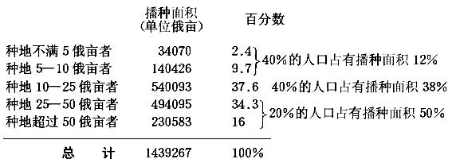
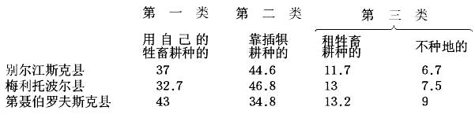
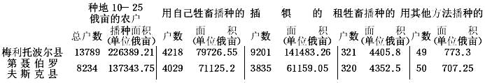

农民生活中新的经济变动（1893年春）
农民生活中新的经济变动
（1893年春）
一
两年前出版的弗·叶·波斯特尼柯夫《南俄农民经济》一书（1891年莫斯科版，ⅩⅩⅩⅡ页+391页）极为详尽周密地描述了塔夫利达、赫尔松和叶卡捷琳诺斯拉夫三省的农民经济，主要是描述了塔夫利达省内陆（北部）各县的农民经济。这一描述所根据的，第一（也是主要的），是上述三省地方自治局统计机关的调查材料；第二，是作者个人的观察，其中一部分是执行公务(1)时进行的，一部分是1887—1890年专为研究农民经济而进行的。
把地方自治局统计机关对整个地区的调查材料汇总成一个完整的东西，并以系统的形式叙述调查的结果，这种尝试本身就有很大的意义，因为地方自治局的统计2提供了丰富的而且非常详尽的关于农民经济状况的材料，但提供的方式却使这些调查材料对公众几乎没有什么用处：地方自治局的统计汇编是整卷整卷的表格（通常是一县一卷），单把这些表格汇总成相当大而清楚的项目，就要专门下一番工夫。把地方自治局的统计资料加以汇总和整理，早就感到有必要了。为了这个目的，最近在进行《地方自治局统计总结》的出版工作。其出版计划如下：选择某一个能说明农民经济的局部问题，然后专门研究如何把地方自治局统计中有关这一问题的全部资料汇总起来；把关于俄国南部黑土地带和北部非黑土地带的资料、关于纯粹农业省份和手工业省份的资料合并在一起。已出版的两卷《总结》就是按这个计划编成的；第1卷专谈“农民村社”（瓦·沃·），第2卷专谈“农民的非份地租地”（尼·卡雷舍夫）3。这种汇总方法的正确性是值得怀疑的，因为这样来汇总，第一，不得不把具有不同经济条件的不同经济区域的资料汇总在一起（同时，由于地方自治局的调查没有完结并漏掉许多县份，要分别说明各个区域非常困难，在第2卷《总结》中已出现这种困难，卡雷舍夫试图把地方自治局统计中的现有资料分别归入各个不同的地区，但没有成功）；第二，不得不单独描述农民经济的某一方面而不涉及其他方面，——这是完全不可能的；不得不把某个问题人为地割裂开，这就丧失了概念的完整性。卡雷舍夫把农民非份地租地同份地租地、同农民的经济分类和播种面积方面的总的资料割裂开。非份地租地仅仅被看作农民经济的一部分，其实这种租地往往是私有经济的特殊经营方式。因此，按经济条件相同的一定地区来汇总地方自治局的统计资料，在我看来是更可取的。
关于用什么方法来汇总地方自治局统计机关的调查材料才比较正确，我是顺便谈谈自己的想法，这种想法是我把《总结》和波斯特尼柯夫的书相比较时产生的，然而我应当声明：波斯特尼柯夫本来就没有打算汇总，因为他把数字资料推到次要地位，而一心注意描述的完备和鲜明。
作者在自己的描述中，对经济性质的、行政法律性质的（土地占有形式）和技术性质的问题（地界问题；经营制度；收获量）几乎予以同样注意，但他打算把第一类问题放在首要地位。
波斯特尼柯夫先生在序言中说：“应当承认，我对农民经济的技术本来可以多注意一些，但我没有这样做，因为在我看来，经济性质的条件在农民经济中比技术起着更重要的作用。我国书刊……往往忽视经济方面……很少注意研究根本的经济问题，而对我国农民经济说来，根本的经济问题就是土地问题和地界问题。本书以较多篇幅说明的正是这两个问题，特别是土地问题。”（序言第Ⅸ页）
我完全同意作者关于经济问题和技术问题孰轻孰重的见解，因此，在本文中，我只打算对波斯特尼柯夫先生著作中从政治经济学方面研究农民经济的那一部分加以论述(2)。
作者在序言中对这一研究的要点说明如下：
“近来在农民耕作业中出现的大量使用机器的现象和富裕农民经营规模的显著扩大，使我国农业生活进入新的阶段，而今年艰难的经济条件无疑地将给这一阶段的发展以新的刺激。随着经营规模的扩大和机器的使用，农民劳动生产率和家庭劳动能力大大提高，但这一点在确定每一农民家庭所能耕种的土地面积时一直是被忽视的……
农民经济中使用机器引起了生活上的重大变化：缩减了农业对人手的需求，使农民更锐敏地感到我国存在着农业人口过剩的现象，促使那些在村里显得多余的家庭增多起来，它们必须外出做零工，实际上成为无地户。同时，农民经济中采用大机器使农民的生活水平在现有的耕作方法和粗放的条件下达到了以前想都想不到的高度。这种情况是农民生活中新的经济变动之所以有力量的保证。本书的首要任务就是指出并阐明南俄农民中的这种变动。”（序言第Ｘ页）
在叙述作者认为这些新的经济变动表现在哪里之前，我应该再附带说明两点：
第一，上面已经指出，波斯特尼柯夫披露了关于赫尔松省、叶卡捷琳诺斯拉夫省和塔夫利达省的资料，但是比较详细的只有最后一省的资料，而且也不是有关全省的，因为作者没有提供经济条件略微不同的克里木的资料，而仅限于塔夫利达省北部别尔江斯克、梅利托波尔和第聂伯罗夫斯克三个内陆县。我要引用的也只是这三县的资料。
第二，塔夫利达省的居民除俄罗斯人外，还有德意志人和保加利亚人，不过他们的人数和俄罗斯人比较起来是不多的：在第聂伯罗夫斯克县的19586户中，德意志移民为113户，即仅占0.6％。在梅利托波尔县的34978户中，德意志人和保加利亚人为（1874+285＝）2159户，即占6.1％。最后，在别尔江斯克县的28794户中为7224户，即占25％。在三县的83358户中，移民总共为9496户，即约占1/9。因此，总的说来，移民人数很少，而在第聂伯罗夫斯克县更是微不足道。作者总是把移民的经济同俄罗斯人的经济分开而加以详细的描述。我则撇开所有这些描述，仅限于研究俄罗斯农民的经济。诚然，数字资料是把俄罗斯人同德意志人合在一起的，但后者为数不多，加进他们也改变不了总的对比关系，所以完全可以根据这些资料来说明俄罗斯农民的经济。塔夫利达省的俄罗斯人是近30年迁居到这一边疆区的，他们和其他俄罗斯省份农民不同的只是比较富裕而已。这个地方的村社土地占有制，照作者的说法，是“典型的和稳定的”(3)。总之，把移民除外，塔夫利达省的农民经济和一般类型的俄罗斯农民经济是没有任何根本区别的。
二
波斯特尼柯夫说：“现时在任何一个较大的南俄村庄（大概对俄国大部分地方都可以这样说），各类居民的经济状况都是极不相同的，很难把一个村庄作为一个整体来谈它的生活水平，并用平均数字来说明这种生活水平。这种平均数字虽能指出农民经济生活中某些一般的决定条件，但丝毫不能说明现实中经济现象的多样性。”（第106页）
稍后，波斯特尼柯夫说得更肯定了。
他说：“经济生活水平的不同使人极难解答居民一般是否富裕的问题。匆匆走过塔夫利达省的大村庄的人，常常作出当地农民甚为富裕的结论；但如果一个村庄的农民有一半是富人，而另一半经常穷困，这个村庄可以称为富裕的村庄吗？究竟应该用什么标志来确定一个村庄比较富裕或不太富裕呢？在这里，说明全村或全区居民境况的平均数字显然不足以断定农民的富裕程度。要判断它，只能根据许多资料的总和，并把居民加以分类。”（第154页）
也许有人觉得确认农民中间的这种分化并不是什么新鲜事情，因为差不多每篇谈论农民经济的文章都提到了这一点。但问题在于人们提到这个事实时总是不重视它的意义，认为它是无关紧要的，甚至是偶然的，认为谈农民经济类型时可以用平均数字加以说明，人们总是讨论各种实际措施对全体农民的意义。从波斯特尼柯夫的书中可以看出他是反对这种观点的。他指出（而且不止一次）“村社内各个农户的经济状况有很大的不同”（第323页），并反对“把农民村社看作某种单一的整体的倾向，而直到现在我国城市知识分子对村社还是这样看的”（第351页）。他说：“最近十年地方自治局统计机关的调查材料说明，我国的村社决不是我们70年代的政论家所想象那样的单一体，近几十年来，村社的居民已分化为几类，其经济富裕程度十分悬殊。”（第323页）
波斯特尼柯夫以散见全书的大量资料证实自己的见解，现在我们应当把所有这些资料系统地汇总起来，检验一下这种见解是否正确，并对下列问题作出回答：究竟谁说得对，是把农民看作某种单一体的“城市知识分子”呢，还是断言农民有很大的不同的波斯特尼柯夫？其次，这种不同究竟达到了怎样的程度？它是否已使我们不能仅仅根据平均数字就从政治经济学角度对农民经济作出总的评述？它是否能够改变实际措施对各类农民所起的作用和影响？
在引用可以提供解决这些问题的材料的数字以前，必须指出，所有这类资料全是由波斯特尼柯夫从塔夫利达省地方自治局统计汇编中摘引来的。最初地方自治局统计机关进行调查时，只收集了各村社的资料，没有收集关于每一农户的资料。但他们很快发觉这些农户在财产状况方面的差别，便进行了按户调查——这是更深入地研究农民经济状况的第一步。下一步就是编制综合表：统计人员确信村社4内部农民在财产方面的差别比农民在法律地位方面的差别更大，于是把农民经济状况的全部指标按照一定的财产差别分类，例如按照每户的播种面积、役畜头数、份地耕地数量等等分类。
塔夫利达省地方自治局统计机关是按照播种面积把农民分类的。波斯特尼柯夫认为这种分类法“是成功的”（第Ⅻ页），因为“在塔夫利达省各县的经济条件下，播种面积是农民生活水平的最重要标志”（第Ⅻ页）。波斯特尼柯夫说：“在南俄草原边疆区，农民的各种非农业性质的副业目前还不大发达，现在极大多数的农村居民主要是从事以种植谷物为主的耕作业。”“地方自治局的统计表明，塔夫利达省北部各县只有7.6％的本地农村居民纯粹从事副业，还有16.3％的居民除自己的耕作业外兼营副业。”（第108页）事实上，按照播种面积分类，就是对俄国其他地区来说，也比地方自治局统计人员所采用的按其他标准（例如按照每户份地或份地耕地的亩数）分类的办法正确得多。一方面，份地数量不能直接说明农户的殷实程度，因为份地面积取决于家庭的登记丁口5数或现有的男性人数，它对户主的殷实程度只有间接的依存关系，其次，因为农民也许不使用份地，将其出租，并且由于没有农具他也无法使用份地。另一方面，既然居民以务农为主，那就必须确定播种面积，以便统计生产，确定农民消费、购买和出卖的粮食数量，因为不弄清这些问题，农民经济的一个很重要的方面就搞不清楚，农业的性质以及它同外水比较起来意义如何等等也会模糊不清。最后，必须以播种面积作为分类的根据，才有可能把一户的经济同所谓农民土地占有标准和耕作标准相比较，同食物标准（Nahrungsfläche）和劳动标准（Arbeitsfläche）相比较。总之，根据播种面积分类不仅是成功的，而且是最好的和绝对必要的。
塔夫利达省的统计人员根据播种面积把农民分为六类：（1）不种地者；（2）种地不满5俄亩者；（3）种地5—10俄亩者；（4）种地10—25俄亩者；（5）种地25—50俄亩者；（6）种地超过50俄亩者。三县各类农户数目的对比情况如下：
| 农户类型 | 别尔江斯克县 | 梅利托波尔县 |
第聂伯罗夫斯克县 | 所有三县每户平均播种面积 |
| | 百分数 |
百分数 | 百分数 | （单位俄亩） |
| 不种地者 | 6 | 7.5 |
9 | —— |
| 种地不满5俄亩者 | 12 | 11.5 |
11 | 3.5 |
| 种地5—10俄亩者 | 22 | 21 |
20 | 8 |
| 种地10—25俄亩者 | 38 | 39 |
41.8 | 16.4 |
| 种地25—50俄亩者 | 19 | 16.6 |
15.1 | 34.5 |
| 种地超过50俄亩者 | 3 | 4.4 |
3.1 | 75 |
把德意志人除外，总的对比（这些百分数指全体居民而言，包括德意志人在内）变化不大：例如作者认为塔夫利达省各县种地少者（种地不满10俄亩者）占40％，种地中等者（种地10—25俄亩者）占40％，种地多者占20％。德意志人不计算在内，最后一项数字降低1/6（即16.7％，只减少3.3％），而种地少者的数目则相应增加。
我们先从土地占有和土地使用情况来确定这些农民类别有多大的不同。
波斯特尼柯夫列出了这样一个表（作者没有计算表中所指出的三类土地的总数（第145页））：
| 农民类别 | 每户平均耕地面积（单位俄亩） |
| 别尔江斯克县 |
梅利托波尔县 | 第聂伯罗夫斯克县 |
| 份地 | 购买地 |
租地 | 总计 | 份地 |
购买地 | 租地 | 总计 |
份地 | 购买地 | 租地 |
总计 |
| 不种地者 | 6.8 | 3.1 |
0.09 | 10 | 8.7 |
0.7 | － | 9.4 |
6.4 | 0.9 | 0.1 |
7.4 |
| 种地不满5俄亩者 | 6.9 | 0.7 |
0.4 | 8.0 | 7.1 |
0.2 | 0.4 | 7.7 |
5.5 | 0.04 | 0.6 |
6.1 |
| 种地5－10俄亩者 | 9 | － |
1.1 | 10.1 | 9 |
0.2 | 1.4 | 10.6 |
8.7 | 0.05 | 1.6 |
10.3 |
| 种地10－25俄亩者 | 14.1 | 0.6 |
4 | 18.7 | 12.8 |
0.3 | 4.5 | 17.6 |
12.5 | 0.6 | 5.8 |
18.9 |
| 种地25－50俄亩者 | 27.6 | 2.1 |
9.8 | 39.5 | 23.5 |
1.5 | 13.4 | 38.4 |
16.6 | 2.3 | 17.4 |
36.3 |
| 种地超过50俄亩者 | 36.7 | 31.3 |
48.4 | 116.4 | 36.2 |
21.3 | 42.5 | 100 |
17.4 | 30 | 44 |
91.4 |
|
全 县 | 14.8 | 1.6 |
5 | 21.4 | 14.1 |
1.4 | 6.7 | 22.2 |
11.2 | 1.7 | 7 |
19.9 |
波斯特尼柯夫说：“这些数字表明，塔夫利达省各县比较富裕的农民不仅使用大量份地（这可能是由于家庭人口多），同时他们也是买地最多租地最多的人。”（第146页）
不过我认为关于这个问题应该指出一点，份地从下等户到上等户的依次递增，不能完全用家庭人口递增来解释。波斯特尼柯夫提供了下表来说明三县各类农民的家庭人口：
| | 男女人口 | 劳动力 |
人 口 | 劳动力 | 人 口 |
劳动力 |
| 不种地者 | 4 5 | 0.9 |
4.1 | 0 9 | 4.6 |
1 |
| 种地不满5俄亩者 | 4.9 | 1.1 |
4.6 | 1 | 4.9 |
1.1 |
| 种地10俄亩者 | 5.6 | 1.2 |
5.3 | 1.2 | 5.4 |
1.2 |
| 种地10—25俄亩者 | 7.1 | 1.6 |
6.8 | 1.5 | 6.3 |
1.4 |
| 种地50俄亩者 | 8.2 | 1.8 |
8.6 | 1.9 | 8.2 |
1.9 |
| 种地超过別俄亩者 | 10.6 | 2 3 |
10.8 | 2.3 | 10.1 |
2.3 |
| 全县 | 6.6 | 1.5 |
6.5 | 1.5 | 6.2 |
1.4 |
从上表可以看出，从下等户到上等户每户份地数量的增加，比男女人数和劳动力数量的增加快得多。我们以第聂伯罗夫斯克县下等户的数字作为100来说明这一点：
| | 份地 | 劳动力 |
男女人口 |
| 不种地者 | 100 | 100 |
100 |
| 种地不满5俄亩者 | 86 | 110 |
106 |
| 种地5—10俄亩者 | 136 | 120 |
117 |
| 种地10—25俄亩者 | 195 | 140 |
137 |
| 种地25—50俄亩者 | 259 | 190 |
178 |
| 种地超过50俄亩者 | 272 | 230 |
219 |
显然，除家庭人口外，每户的殷实程度也是决定份地数量的因素。
我们研究各类农民购买地数量的资料时可以看出，购买土地的几乎都是种地超过25俄亩的上等户，其中主要是每户种地75俄亩的最大的耕作者。可见，购买地的资料完全证实了波斯特尼柯夫关于农民有不同的类别的看法。例如作者在第147页上谈到“塔夫利达省各县农民购买了96146俄亩土地”时所引证的资料就根本不能说明问题，因为这些土地几乎全部掌握在占有份地最多的区区少数人手中，即掌握在波斯特尼柯夫所说的“富裕”农民手中，而这些农民不超过人口的1/5。
关于租地也必须这样说。上表中的租地一项包括份地的和非份地的租地。可以看出，租地面积完全随农民富裕程度的提高而相应地扩大，因此，一个农民自己占有的土地愈多，他租进的土地也愈多，从而也就剥夺了最贫苦户所需要的土地面积。
必须指出，这是全俄国的普遍现象。卡雷舍夫教授总结了俄国各地（只要那里有地方自治局统计机关的调查材料）农民非份地的租地情况，并把租地面积和租地户的富裕程度之间的直接依存关系表述成为一条普遍规律(4)。
其次，波斯特尼柯夫还提供了更详细的关于租地（非份地的和份地的均在内）分配的数字，现在我把这些数字引证如下：

这里我们也可以看出，平均数字完全不能说明问题：因为我们说第聂伯罗夫斯克县有56％的农民租种土地，这句话只能给人们一个关于这种租地的极不完全的概念，因为在自己土地不够的（下面将说到）各类农户中，租地户的百分数低得多，例如在第一类中只有25％，而自己土地很多的上等户则几乎都租种土地（91％）。每一租地户所租土地在数量上的差别还更显著，例如上等户租的土地分别为下等户的30倍、15倍、24倍。显然，这也就改变了租地本身的性质，因为在上等户中这已是商业性的经营，而在下等户中这也许是由于极端贫困引起的。后一推测可以用租金方面的资料来证实：最低的几类付出的土地租金较高，有时竟比上等户付出的高3倍（在第聂伯罗夫斯克县）。这里必须提醒一点：租地愈少租金愈高并不是我国南部的特点，因为卡雷舍夫的著作证明这个规律是普遍适用的。
波斯特尼柯夫谈到这些资料时说：“塔夫利达省各县租种土地的多半是拥有足够数量的份地耕地和私有耕地的富裕农民；非份地即离村较远的私有地和官地的租种更是这样。其实这也是很自然的事情，因为租种较远的土地要有足够数量的役畜，而这里不大富裕的农民连耕种自己份地所需的役畜也不足。”（第148页）
不应该认为，上述租地分配情况，是由个人租种土地造成的。即使租种土地的是村团，情况也毫无改变，原因很简单，因为土地是按照同样的根据即“按照货币”来分配的。
波斯特尼柯夫说：“根据国家产业管理局清册，1890年三县按照契约出租的133852俄亩官地中，租给农民村团使用的可耕地有84756俄亩，即占全部面积的63％左右。但是，农民村团租来的土地是由为数不多的户主而且多半是由富裕户主使用的。地方自治机关的按户调查十分明显地指出了这一事实”（第150页）(5)：[见第13页表格。——编者注]
波斯特尼柯夫总结道：“可见第聂伯罗夫斯克县富裕农户使用了全部租地的1/2以上，别尔江斯克县则在2/3以上，而在租种官地最多的梅利托波尔县甚至占租地面积的4/5以上。三县最贫苦农户（种地不满10俄亩者）一共只有1938俄亩，即租地的4％左右。”（第150页）作者接着又提供了一连串的例子来说明村团租来的土地分配不均，但这些例子不必引用了。
谈到波斯特尼柯夫关于租地决定于租地户的富裕程度的结论时，指出地方自治局统计人员的相反意见是极有意义的。
|
农 民
类 别 | 别尔江斯克县 |
梅利托波尔县 | 第聂伯罗夫斯克县 |
三县总计 |
租 地
户数 | 租地面积（单位俄亩） | 每一租地户租地面积 |
租地户数 | 租地面积（单位俄亩） |
每一租地户租地面积 | 租地户数 |
租地面积（单位俄亩） | 每一租地户租地面积 |
租地户数 | 租地面积（单位俄亩） |
百分比 | 每一租地户租地面积 |
| 种地不满5俄亩者 | 35 | 66 |
1.7 | 24 | 383 |
16 | 20 | 62 |
3.1 | 83 | 511 |
1 | 6.1 |
| 种地5—10俄亩者 | 227 | 400 |
1.8 | 159 | 776 |
4.8 | 58 | 251 |
4.3 | 444 | 1427 |
3 | 3.2 |
| 种地10—25俄亩者 | 687 | 2642 |
3.8 | 707 | 4569 |
6.4 | 338 | 1500 |
4.4 | 1732 | 8711 |
20 | 5.0 |
| 种地25—50俄亩者 | 387 | 3755 |
0.7 | 672 | 8564 |
12.7 | 186 | 1056 |
5.7 | 1245 | 13375 |
30 | 10.7 |
| 种地超过50俄亩者 | 112 | 3194 |
28.3 | 440 | 15365 |
34.9 | 79 | 1724 |
21.8 | 632 | 20283 |
46 | 32.1 |
|
总 数 | 1453 | 10057 |
7 | 2002 | 29657 |
14.8 | 681 | 4593 |
6.7 | 4136 | 44307 |
100 | 10.7 |
在书的开头，波斯特尼柯夫刊载了他的《论塔夫利达省、赫尔松省和叶卡捷琳诺斯拉夫省地方自治局的统计工作》一文（第Ⅺ—ⅩⅩⅩⅡ页）。文中他顺便研究了塔夫利达省地方自治机关在1889年出版的《塔夫利达省省志》，这本省志简短地总结了整个调查研究工作。波斯特尼柯夫在分析该书专论租地的一篇时说：
“地方自治局统计表明，在我国土地很多的南部和东部各省，除自己的大量份地外还租种相当多的土地的富裕农民占较大的百分数。这里经营的目的不仅为了满足家庭本身的需要，而且还为了得到一些盈余，一些收入，农民就是靠这种收入来修缮他们的建筑物、购置机器和添购土地。这种愿望是很自然的，而且不包含任何罪恶，因为它还未显现出任何的盘剥因素。〈这里确实没有盘剥因素，但剥削因素无疑是有的：富裕农民既租进远远超过需要的土地，也就夺取了贫苦农民生产食物所需的土地；他们既扩大经营规模，也就需要追加的劳动力，也就要雇用工人。〉但是地方自治局某些统计人员，大概认为农民生活中的这些现象是不合理的，竭力缩小这些现象的意义，而且竭力证明：农民租地主要是由于需要食物；如果富裕农民也租很多土地，那么，这种租地户的百分数毕竟是随着份地面积的扩大而不断减少的。”（第ⅩⅦ页）为了证明这种想法，《省志》编者维尔涅尔先生把塔夫利达全省有1—2个劳动力和2—3头役畜的农民按份地的多少分成几类。结果是：“随着份地面积的扩大，租地户的百分数相应减少，每户的租地面积也相应地减少，但减少的幅度不及前者。”（第ⅩⅧ页）波斯特尼柯夫非常公正地指出，这类方法根本不能说服人，因为农民中的这一部分（只有2—3头役畜的农民）是随便抽出的，而且撇开的正是富裕农民；此外，也不能把塔夫利达省内陆各县和克里木合在一起，因为它们的租地情况并不一样：在克里木有1/2—3/4的居民是无地的（即所谓分成农民），在北部各县这种农民只有3—4％。在克里木几乎随时都可找到出租的土地，在北部各县有时却不能找到。指出下述一点是有意义的：其他各省地方自治局的统计人员也做过同样的尝试（当然，同样是不成功的），想把农民生活中一些“不合理的”现象，例如以获得收入为目的的租地掩盖起来。（见卡雷舍夫上述著作）
既然农民租种非份地的分布情况证明各个农户之间不仅存在着量的差别（租得多，租得少），而且存在着质的差别（由于需要食物而租地；为了商业目的而租地），那么租种份地的情况就更是这样了。
波斯特尼柯夫说：“1884—1886年塔夫利达省三县在进行按户调查时所登记的、农民从农民手中租来的份地耕地共为256716俄亩，这个数目占该地全部农民份地耕地的1/4，这里还没有把农民租给居住在村庄中的平民知识分子以及文书、教员、神职人员和其他人（在按户调查时不在调查之列的非农民成分的人）的土地面积计算在内。下列数字表明，这一大批土地几乎全部是由富裕农户租种的。在调查时登记的、户主从邻人那里租来的份地耕地的亩数如下：
| 每户种地不满10俄亩者 | 16594俄亩 |
即61％ |
| 每户种地10—25俄亩者 | 89526俄亩 |
即35％ |
| 每户种地超过25俄亩者 | 150596俄亩 |
即59％ |
| 共 计 | 256716俄亩 |
100％ |
这些出租的土地，正如土地出租者一样，大多数是属于不种地、不经营和种地少的那个农民类别的。可见塔夫利达省各县有相当大一部分农民（约占全体居民的1/3左右）没有耕种自己的全部份地（一部分由于不愿种地，但大部分由于没有种地所需的役畜和农具），把它出租，从而使另一半比较富裕的农民使用更多的土地。无疑地，大多数土地出租者是破落的户主。”（第136—137页）
下面这张表就是上述一段话的证明，它“表明了塔夫利达省两县（地方自治局的统计缺梅利托波尔县的资料）出租份地的户主的相对数字和他们出租的份地耕地的百分数”（第135页）。
| | 别尔江斯克县 |
第聂伯罗夫斯克县 |
| | 出租份地的户主的百分数 | 出租的份地的百分数 |
出租份地的户主的百分数 | 出租的份地的百分数 |
| 不种地者 | 73 | 97 |
80 | 97.1 |
| 种地不满5俄亩者 | 65 | 54 |
30 | 38.4 |
| 种地5-10俄亩者 | 46 | 23.6 |
23 | 17.2 |
| 种地10—25俄亩者 | 21.5 | 8.3 |
16 | 8.1 |
| 种地25-59俄亩者 | 9 | 2.7 |
7 | 2.9 |
| 种地超过50俄亩者 | 12.7 | 6.3 |
7 | 13.8 |
| 全 县 | 32.7 | 11.1 |
25.7 | 14.9 |
我们考察了农民占有土地和使用土地的情况，现在来谈谈役畜和农具的分配情况。关于各类农民的役畜数量，波斯特尼柯夫提供了如下的三县合计的数字：
| | 共有 | 平均每户有 |
没有役畜的
农户的百分数 |
| | 马 | 耕牛 |
役畜 | 其他畜类① | 共有① |
| 不种地者 | — | — |
0.3 | 0.8 | 1.1 |
80.5 |
| 种地不满5俄亩者 | 6467 | 3082 |
1.0 | 1.4 | 2.4 |
48.3 |
| 种地5—10俄亩者 | 25152 | 8924 |
1.9 | 2.3 | 4.2 |
12.5 |
| 种地10—25俄亩者 | 80517 | 24943 |
3.2 | 4.1 | 7.3 |
1.4 |
| 种地25—59俄亩者 | 62823 | 19030 |
5.8 | 8.1 | 13.9 |
0.1 |
| 种地超过50俄亩者 | 21003 | 11648 |
10.5 | 19.5 | 30 |
0.03 |
| 共 计 | 195962 | 67627 |
3.1 | 4.5 | 7.6 |
— |
| [①注：折合成大牲畜。] |
这些数字本身不能说明类别，这一点等以后叙述耕作机具和划分农民经济类别时再来说明。这里我们只指出，各类农民在拥有役畜数量上的差别是那样巨大，以致我们看到上等户的牲畜远远超过他们家庭的需要，而下等户的牲畜（尤其是役畜）却少得连独立经营也不可能。
关于农具分配的资料也完全相同。“按户调查曾把农民的农具即犁和多铧浅耕犁进行登记，提供了说明三县全部居民情况的下列数字”（第214页）：
| | 没有耕具的农户的百分数 | 只有多铧浅耕犁的农户的百分数 |
有犁及其他耕具的农户的百分数 |
| 别尔江斯克县 | 33 | 10 |
57 |
| 梅利托波尔县 | 37.8 | 28.2 |
34 |
| 第聂伯罗夫斯克县 | 39.3 | 7 |
53.7 |
这张表说明有何等众多的农民失去了独立经营的可能。至于各上等户的情形，从下列按播种面积划分的各类农民每户农具平均数量的资料可以看出：
|
| 每户农具的平均数 |
| 别尔江斯克县 |
梅利托波尔县 | 第聂伯罗夫斯克县 |
运输工具
（轻便马车等） | 耕具（犁和
多铧浅耕犁） |
运输工具 | 耕具 |
运输工具 |
耕具 |
| 种地5—10俄亩者 | 0.8 | 0.5 |
0.8 | 0.4 |
0.8 | 0.5 |
| 种地10—25俄亩者 | 1.2 | 1.3 |
1.2 | 1 |
1 | 1 |
| 种地25—50俄亩者 | 2.1 | 2 |
2 | 1.6 |
1.7 | 1.5 |
| 种地超过50俄亩者 | 3.4 | 3.3 |
3.2 | 2.8 |
2.7 | 2.4 |
在农具数量上，上等户比下等户（作者完全抛开了种地不满5俄亩的一类）多3—5倍；在劳动力数量(6)上，上等户比下等户多11/12，即不到一倍。从这里已可看出上等户必然要雇工人，而下等户有一半没有耕具（注意：这里的“下等”户指倒数第三类），因此也就失去了独立经营的可能。
自然，上述土地、役畜和农具数量上的差别也决定着播种面积上的差别。上文已列出六类农民每户的播种面积亩数。而塔夫利达省农民的播种面积总数在各类之间的分配情形如下：

这些数字一目了然。应该补充的只有一点：波斯特尼柯夫认为（第272页）每户光靠耕作业就能维持全家生活的平均播种面积为16—18俄亩。
三
前一章里已经列举了一些说明各类农民的财产状况和经营规模的资料。现在应该列举一些确定各类农民的经营性质、经营方式和经营制度的资料。
首先谈谈波斯特尼柯夫的这一论点：“随着经营规模的扩大和机器的使用，农民劳动生产率和家庭劳动能力大大提高。”（第Ⅹ页）作者为了证明这一论点，算出了各类农户耕种一定面积的土地需要多少劳动力和役畜。计算时不可能利用关于家庭人口的资料，因为“下等户提供自己的一部分劳动力出外去当雇农，而上等户则雇用雇农”（第114页）。塔夫利达省地方自治局的统计没有关于雇用的和提供的劳动力的数字，因此，波斯特尼柯夫根据地方自治局统计机关关于雇用劳动力的户数的资料，根据耕种一定面积土地需要多少劳动力的计算，大致算出了这个数字。波斯特尼柯夫承认，不能要求这样算出的数字十分确切，但他认为他的计算只会大大改变两类上等户的家庭人口，因为其余几类的雇工数字不大。读者把前面引证的关于家庭人口的资料和下表比较一下，就可检验这种观点是否正确。
| | 塔夫利达省三县 |
| 劳动力 | 每户(连雇工在内〕 |
| 雇用的 | 提供的 | 差额 |
人口 | 劳动力 |
| 不种地者 | 239 | 1077 |
－ 838 | 4.3 | 0.9 |
| 种地不满5俄亩者 | 247 | 1484 |
―1237 | 4.8 | 1.0 |
| 种地5—10俄亩者 | 465 | 4292 |
―3827 | 5.2 | 1.0 |
| 种地10—25俄亩者 | 2846 | 3389 |
－ 543 | 6.8 | 1.6 |
| 种地25—59俄亩者 | 6041 | — |
＋6041 | 8.9 | 2.4 |
| 种地超过50俄亩者 | 8241 | — |
＋8241 | 13.3 | 5 |
| 总 计 | 18079 |
10242 | ＋7837 | — |
— |
把上表最后一栏和关于家庭人口的资料比较一下，我们可以看出波斯特尼柯夫稍稍减少了下等户的劳动力数目而增加了上等户的劳动力数目。因为他的目的是要证明耕种一定面积土地所需的劳动力数目是随着经营规模的扩大而减少的，所以作者的大致计算只会缩小而不会夸大这种减少的程度。
作了这一初步计算之后，波斯特尼柯夫提供了一张表来说明各类农民的播种面积与劳动力、役畜以及人口数量的对比关系（第117页）：
| |
每100俄亩播种面积 |
| 1对役畜耕种 |
户数 | 人口 |
劳动力 |
役畜头数 |
| （连雇工在内） |
| 种地不满5俄亩者 | 7.1俄亩 | 28.7 |
136 | 28.5 | 28.2 |
| 种地5—10俄亩者 | 8.2俄亩 | 12.9 |
67 | 12.6 | 25 |
| 种地10—25俄亩者 | 10.2俄亩 | 6.1 |
41.2 | 9.3 | 20 |
| 种地25—59俄亩者 | 12.5俄亩 | 2.9 |
25.5 | 7 | 16.6 |
| 种地超过50俄亩者 | 14.5俄亩 | 1.3 |
18 | 6.8 | 14 |
| 总 计 | 10.9俄亩 |
5.4 | 36.3 | 9 |
18.3 |
“可见，随着经营规模和耕地面积的扩大，农民用于养活劳动力即人和牲畜的支出（这是农业中一项最主要的支出）就依次递减。种地多的各类农户用在每俄亩播种面积上的这项支出几乎只有种地少的各类农户的一半。”（第117页）
作者在下面用一个门诺派7农户的详细家庭收支情况作例子来证实劳力和役畜方面的支出是农业中的主要支出的论点。在该农户的全部支出中，经营方面的支出占24.3％，役畜方面的支出占23.6％，劳力方面的支出占52.1％。（第284页）
波斯特尼柯夫认为他所作的关于劳动生产率随着经营规模的扩大而提高的结论具有很大的意义（从上面引证的他的序言中的一段话也可以看出这一点）。就研究我国农民的经济生活和各类农户的经营性质来说，就小规模耕作与大规模耕作的相互关系这个总问题来说，也不能不承认这个结论确实重要。后一个问题被许多著作家搅得混乱不堪，而产生这种混乱的主要原因是把社会条件不同、经营方式各异的不同类型的经济拿来比较，例如把靠生产农产品取得收入的经济和靠剥削其他缺乏土地的农户而取得收入的经济（例如紧接着1861年改革8后的那一时期的农民经济和地主经济）拿来比较。波斯特尼柯夫完全避免了这个错误，他没有忘记比较的基本规则：拿来比较的现象必须是同类的。
为了更详细地证明就塔夫利达省三个县所得出的论点，作者首先分别引用了各县的资料，其次单独引用了关于俄罗斯居民（确切地说是俄罗斯居民中人数最多的一类农民——前国家农民9）的资料。（第273—274页）
| | 每对役畜耕种的土地(单位俄亩） |
| 全 县 |
前国家农民 |
| 别尔江斯克 | 梅利托波尔 |
第聂伯罗夫斯克 | 别尔江斯克 |
梅利托波尔 | 第聂伯罗夫斯克 |
| 种地不满5俄亩者 | 8.9 | 8.7 |
4.3 | — | — |
— |
| 种地5—10俄亩者 | 8.9 | 8.7 |
6.8 | 8.9 | 9.1 |
6.8 |
| 种地10—25俄亩者 | 10.2 | 10.6 |
9.7 | 10.3 | 10.9 |
9.6 |
| 种地50俄亩者 | 11.6 | 12.4 |
12.3 | 12.3 | 12.8 |
11.9 |
| 种地超过別俄亩者 | 13.5 | 13.8 |
15.7 | 13.7 | 14.3 |
15 |
|
平均 | 10.7 |
11.3 | 10.1 | — |
― | ― |
还是那个结论：“耕种一定面积土地所需役畜的相对数目，经营规模小的农户比‘设备完善的’农户大半倍到一倍。按户调查发现同一规律也适用于所有其他人数较少的一类农民，如前地主农民10、租地者等，适用于一切地区，甚至以一乡一村为限的最小地区。”（第274页）
播种面积和经营费用的对比关系不利于小农户，还表现在另一种费用上即用于农具和役畜的费用上。
上面我们已经看到，从下等户到上等户，每户的农具和役畜的数目是怎样迅速增加的。如果计算一下耕种一定面积土地所需的农具和役畜，就会看出它们是随着从下等户到上等户而减少的（第318页）：
| | 每100俄亩播种面积 |
| 役畜 | 犁和多铧浅耕犁 |
轻便马车 |
| 种地不满5俄亩者 | 42头 | 4.7 |
10 |
| 种地5—10俄亩者 | 28.8头 | 5.9 |
9 |
| 种地10—25俄亩者 | 24.9头 | 6.5 |
7 |
| 种地50俄亩者 | 23.7头 | 4.8 |
5.7 |
| 种地超过別俄亩者 | 25.8头 | 3.8 |
4.3 |
|
平均 | 25.5头 |
5.4 | 6.5 |
“这张表说明，耕种一定面积土地所需的大农具（耕具和运输工具）数量是随每户播种面积的增多而递减的，因此，上等户用于耕具和运输工具的支出按每俄亩平均要相对地少些。种地不满10俄亩的农户有些例外：它的耕具比另一类种地16俄亩的农户少些，这只是因为这一类农户有许多不是用自己的农具而是用租来的农具种地，而这绝不会缩减农具方面的支出。”（第318页）
波斯特尼柯夫说：“地方自治局的统计十分清楚地表明，农民经营规模愈大，耕种一定面积土地所需的农具、劳动力和役畜就愈少。”（第162页）
后面波斯特尼柯夫又指出：“前几章已经说明，在塔夫利达省的几个县里，各类农民和各个地区都有这种现象。根据地方自治局的统计资料看来，在其他也是以耕作业为农民经济的主要部门的省份里，农民经济中也显露出这种现象。可见这种现象十分普遍，象是一种规律而且具有很大的经济意义，因为这个规律使小农业在很大程度上失去了它的经济意义。”（第313页）
波斯特尼柯夫的后一意见说得早了一点。要证明小经济必然为大经济所排挤，只确定大经济获利较多（产品成本低得多）是不够的，还必须确定货币经济（确切些说，就是商品经济）压倒自然经济，因为在自然经济的条件下，产品是供生产者自己消费而不进入市场，低廉的产品不会在市场上同昂贵的产品相遇，因此也就不可能排挤它。这一点下面将更详细地谈到。
为了证明上面确定的规律适用于全俄国，波斯特尼柯夫选择地方自治局统计机关曾详细地把居民作过经济分类的几个县，并算出各类农户每对役畜和每个劳力所耕种的平均面积。得出的结论仍旧一样：“经营规模小的农户为耕种一定面积土地而支付的劳动力费用，比经营规模较大的农户多半倍到一倍。”（第316页）这一点无论对于彼尔姆省（第314页）或沃罗涅日省，无论对于萨拉托夫省或切尔尼戈夫省（第315页）都是正确的，因此，波斯特尼柯夫确已证明了这一规律普遍适用于全俄国。
现在我们来谈谈各类农户的“收入和支出”（第9章）和它们同市场的关系问题。
波斯特尼柯夫说：“每一个自成独立单位的农户，它的土地面积由下列四部分组成：第一部分是生产养活劳动者家庭和住在该农户家里的工人的食物，就狭义来说，这是农户的食物面积；第二部分是供给为农户干活的牲畜的饲料，也可以称为饲料面积；第三部分包括宅地、道路、池塘等等以及提供种子的那部分播种面积，可称为经营面积，因为它是为全部经营服务的；最后，第四部分是生产由农户拿到市场出售的未加工的或加过工的粮食和其他农作物，这是农户的商业面积或市场面积。在每一单个农户里，土地分为上述四部分不取决于所种植的作物的种类，而取决于种植这些作物的直接目的。
农户的货币收入取决于它的土地的商业部分，因此，这部分面积愈大，从它得到的产品的相对价值愈高，农户户主向市场提出的需求就愈大，因此国家在本国市场范围内能够保持的非农业的劳动数量就愈多，农业对于本国的行政（税收）和文化的意义就愈大，户主本身的纯收入和他用于农业支出和农业改良的资金也就愈多。”（第257页）
波斯特尼柯夫的这一论断，假如再作一个十分重要的修正，那就完全正确了。作者说到农户的商业面积对于国家的意义，其实很明显，这只能指货币经济占优势，大部分产品采取商品形式的国家。忘记这一条件，认为它是不言而喻的事情，不去精确地研究它在某一国家适用到怎样的程度，就会犯庸俗政治经济学的错误。
从整个经济中划分出它的市场面积，这是很重要的。对于国内市场有意义的决不是生产者的全部收入（它决定该生产者的富裕程度），而只是他的货币收入。是否拥有货币绝不是由生产者的富裕程度决定的：从自己那块土地上得到足够自己消费的产品而从事自然经济的农民，是享受到富裕生活的，但是他没有货币；从土地上只得到他所需要的一小部分粮食而靠偶然的“外水”得到另一部分粮食（虽然数量少，质量差）的半破产农民，是享受不到富裕生活的，但是他有货币。由此可见，任何关于农民经济及其收入对于市场的意义的论断，如果不是以计算货币收入部分作依据，那是不会有丝毫价值的。
为了确定各类农户的上述四部分播种面积各占多少，波斯特尼柯夫先算出了全年的粮食消费量，他大致估算每人需要两俄石FN1粮食（第259页），即每人需要在播种面积中占2/3俄亩。然后确定每匹马的饲料面积占1.5俄亩，种子面积占耕地的6％，于是得出如下的数字(7)（第319页）：
| | 每100俄亩播种面积 |
所得的货币收入 |
| | 经营面积 | 食物面积 |
饲料面积 | 商业面积 |
每俄亩 | 每户 |
| 种地不满5俄亩者 | 8.9 | 8.7 |
4.3 | — | — |
— |
| 种地5—10俄亩者 | 8.9 | 8.7 |
6.8 | 8.9 | 9.1 |
6.8 |
| 种地10—25俄亩者 | 10.2 | 10.6 |
9.7 | 10.3 | 10.9 |
9.6 |
| 种地50俄亩者 | 11.6 | 12.4 |
12.3 | 12.3 | 12.8 |
11.9 |
| 种地超过別俄亩者 | 13.5 | 13.8 |
15.7 | 13.7 | 14.3 |
15 |
波斯特尼柯夫说：“上述各类农户在货币收入上的差别足以说明经营规模的意义，但实际上各类农户在庄稼收入上的差别一定更大，因为应该估计到上等户每俄亩的收获量更大，出售粮食的价格更高。
在对收入的这一计算中，我们纳入计算中的不是农户的全部面积，而只是耕地面积，因为我们没有塔夫利达省各县农户的各种牲畜所使用的其他农业用地的准确数字；但是纯粹从事农业的南俄农民的货币收入几乎完全取决于播种面积，所以上述数字相当准确地描绘出各类农民从农业所得的货币收入上的差别。这些数字表明货币收入是怎样随着播种面积而剧烈地变化着。种地75俄亩的家庭每年得到的货币收入达1500卢布，种地34½俄亩的家庭每年有574卢布，而种地16⅓ 俄亩的家庭只有191卢布。种地8俄亩的家庭只得到30卢布，也就是说，如果不搞副业，这笔收入是不够抵补经营上的货币支出的。当然，上述数字还没有表明从经营上得到的纯收入，要算出纯收入必须从上述数字减去农户用在捐税、农具、建筑物、购置衣服鞋子等等方面的一切货币支出。但是，这些支出的增加并不与经营规模的扩大成正比。家庭开支的增加与家庭人数成正比，而家庭人数的增加，从表内可以看出，比各类农户播种面积的增加慢得多。至于各项经营支出（缴纳土地税和地租，维修建筑物和农具），它们的增加最多不过同经营规模成正比，而经营上的货币收入总数的增加，如上表所表明的，却不止与播种面积成正比。而且所有这些经营支出同农户用于维持劳动力的主要支出比较起来是很小的。所以我们可以这样来表述这一现象：农户经营农业从每俄亩土地上得到的纯收入，随着经营规模的缩小而递减。”（第320页）
这样，我们从波斯特尼柯夫的资料中可以看出，各类农民的农业经营同市场的关系是极不相同的：上等户（每户种地超过25俄亩者）是从事商业性的经营，生产粮食的目的是获得收入。相反，在下等户中，农业不能满足家庭必不可少的需要（这是指每户种地不满10俄亩的耕作者），如果精确地计算一下经营上的全部支出，那一定会发现这类农民的经营是亏本的。
利用波斯特尼柯夫所列举的资料来解决下面这个问题也是极有意义的：农民分裂为不同类别，同他们向市场提出的需求量有什么样的关系呢？我们知道，这种需求量取决于商业面积的大小，而后者又随着经营规模的扩大而增加；但要知道，上等户经营规模的扩大与下等户经营规模的缩小是相辅而行的。在农户数量上，下等户比上等户多一倍：前者在塔夫利达省各县占40％，后者只占20％。总的说来，上述的经济分化是否会减少向市场提出的需求量呢？老实说，我们根据先验的推论就可以给这个问题以否定的回答：问题在于下等户的经营规模很小，只靠农业不能满足家庭的全部需要；为了不致饿死，这些下等户只好把自己的劳动力拿到市场上去，出卖劳动力使他们得到一定数量的货币，这样就抵补了（在一定程度上）由于经营规模缩小而引起的需求量的缩减。但波斯特尼柯夫的资料可以使我们更确切地回答上面提出的问题。
我们以某一数量的播种面积如1600俄亩为例，并假设用两种方法分配它：第一，分配给经济上同类的农民，第二，分配给我们现时在塔夫利达省各县所看到的那种已分裂为不同类别的农民。在第一种情况下，假定每个农户平均各得16俄亩播种面积（塔夫利达省各县的实际情况正是这样），那么，就有100个农户依靠农业完全可以满足自己的需要。向市场提出的需求量为191×100＝19100卢布。在第二种情况下，1600俄亩播种面积还是分配给100户，但用另一种分法，即象塔夫利达省各县农民实际分配播种面积那样：完全不种地者8户，种地4俄亩者12户，种地8俄亩者20户，种地16俄亩者40户，种地34俄亩者17户，种地75俄亩者3户（播种面积共为1583俄亩，这就是说，甚至略少于1600俄亩）。这样分配时，有很大一部分农民（40％）不能从自己土地上得到足以满足全部需要的收入。只计算种地超过5俄亩的农户，向市场提出的货币需求额就为20×30+40×191+17×574+3×1500＝21350卢布。这样一来，我们可以看到，尽管撇开整整20户[毫无疑义，它们也有货币收入，只不过不是由出售自己的产品得来的]，尽管播种面积缩减到1535俄亩，但向市场提出的货币需求总额却增加了11。
上面已经说过，下等户的农民不得不出卖自己的劳动力；相反，上等户必须购买劳动力，因为要耕种他们面积很大的土地，自己的人手已经不够了。现在，我们应该更详细地谈谈这个重要现象。波斯特尼柯夫似乎没有把这个现象归入“农民生活中新的经济变动”（至少他在概括自己的研究结果的序言中没有提到它），但是，它比富裕农民采用机器或扩大耕地是更值得注意的。
作者说：“塔夫利达省各县较富裕的农民一般都大量使用雇工，他们耕种的面积远远超过自己家庭的劳动能力。例如三县各类农民每100户中有雇工的情况如下：
| 不种地者………… | ………………………………………………… | 3.8% |
| 种地不满5俄亩者 | ………………………………………………… | 2.5 |
| 种地5—10俄亩者 | ………………………………………………… | 2.6 |
| 种地10—25俄亩者 | ………………………………………………… | 8.7 |
| 种地25—59俄亩者 | ………………………………………………… | 34.7 |
| 种地超过50俄亩者 | ………………………………………………… | 64.1 |
| 总 计…… | ………………………………………………… | 12.9% |
这些数字表明，使用雇工的多半是种地较多的富裕户主。”（第144页）
把前面引用过的不包括雇工的（三县分列的）和连雇工在内的（三县合计的）各类家庭人口的数字比较一下，我们就可以看到，种地25—50俄亩的户主靠雇工使自己的劳动力增加约1/3（每户的劳动力由1.8—1.9增至2.4），而种地超过50俄亩的户主使劳动力约增加一倍（从2.3增至5）；按照作者的计算甚至多于一倍，他认为这些户主自己有7129人，应该雇用的劳动力达8241人（第115页）。下等户必须提供大量外出谋生的劳动力，这从农业经营不能给它们提供维持自己生活所必需的产品这一点上即可明白地看出。可惜我们没有关于提供外出谋生的劳动力数量的精确资料。出租自己份地的户主数目可以作为这一数量的间接指标：前面已引过波斯特尼柯夫的意见，说塔夫利达省各县约有1/3居民没有耕种自己的全部份地。
四
从上面引证的资料可以看出，波斯特尼柯夫完全证明了他的各个农户的经济状况“有很大的不同”的论点。这种不同不仅涉及农民的财产状况和播种面积，甚至涉及各类农户的经营性质。不仅如此。“不同”和“分化”这两个术语本来是不足以充分说明现象的。如果一个农民有1头役畜，另一个有10头，我们称之为分化。如果一个农民除了他占有的份地外，单纯为了利用土地取得收入而租进几十俄亩土地，从而使另一个农民没有可能租到养家餬口所需的土地，那么，摆在我们面前的显然是某种重要得多的现象；我们应该把这种现象称为“悬殊”（第323页），称为“经济利益的斗争”（第ⅩⅩⅩⅡ页）。波斯特尼柯夫使用这些术语的时候，没有充分估计到这些术语的全部重要性；他也没有发觉后面这两个术语也是不够的。租进变穷了的那类居民的份地，雇用不再自己种地的农民当雇农，这已经不只是悬殊，这是直接的剥削。
既然承认现代农民中有深刻的经济悬殊，我们也就不能只按财产状况把农民分为几个阶层。如果上述的不同只是量的差别，这样划分也许够了。但事实并非如此。如果一部分农民从事农业的目的是为了商业利益，其结果是获得大量的货币收入，而另一部分农民从事农业甚至不能满足家庭必不可少的需要，如果上等农户靠下等农户的破产来改善自己的经营，如果富裕农民大量利用雇佣劳动，而贫苦农民却不得不出卖自己的劳动力，那么，这无疑已是质的差别了。所以，现在我们的任务应该是按照经营性质（经营性质不是指技术上的特点，而是指经济上的特点）的差别对农民进行分类。
波斯特尼柯夫对后面这些差别注意太少，所以他虽然也承认必须“更概括地把居民划分为几个类别”（第110页）并作了这种划分的尝试，但是，我们马上可以看到，不能认为他的尝试是完全成功的。
波斯特尼柯夫说：“为了更概括地把居民划分为几个经济类别，我们要利用另一标志，这一标志虽然在各地区并没有同类经济意义，但是，它更符合农民自己所采用的分类法，而且地方自治局统计人员也曾指出各县都有这种分类法。这就是按户主在经营方式上的独立程度即按每户役畜头数来分类。”（第110页）
“目前南俄地区的农民，可以按户主的经济独立程度和经营方式分为如下三大类：
（1）有畜力的户主，即有全套的犁或代替犁的其他耕具，不租牲畜、不需插犋
12而用自己的牲畜足以进行田间工作的户主。这些户主使用曳引犁或多铧浅耕犁，自己有役畜2—3对或更多些，与此相适应，每户有成年劳力三个，或至少有成年劳力两个和半劳力一个。
（2）畜力不够的户主或插犋户，即由于没有足够数量的牲畜来独立驾用而靠插犋进行田间工作的户主。这种户主每户饲养1对、1.5对、在某些场合下甚至2对役畜，与此相适应，有一个或两个成年劳力。这种户主在耕种难耕的土地和必须使用3对役畜曳引的犁（或代替它的多铧浅耕犁）的时候，即使有2对役畜也必须插犋。
（3）没有畜力的或根本没有牲畜的‘无马的’户主，或有1头役畜（大多数是马，因为耕牛通常总是成对地养，只有两头套在一起才能耕地）的户主。他们租别人的牲畜种地，或者出租自己的土地以换取一部分收成而根本不种地。
农民自己通常就是按农民生活中的根本经济标志来这样分类的（这种经济标志在这里就是役畜头数和驾用方式）。但是这样分类，无论在上述三类的每一类中或各类之间，都有很大的差异。”（第121页）

为了确定上述三县的畜力分配情况，除了上表外，作者又提供了一个按农户饲养的役畜头数分类的表：

可见在塔夫利达省各县，一户最少要有4头役畜才算是畜力充足。
不能认为波斯特尼柯夫这样分类是完全成功的，首先因为在这三类的每一类中都有很大的差别。
作者说：“我们看到在南俄有畜力的户主是很不同的：富裕农民畜力很多，较贫苦的农民畜力很少。前者又分为畜力充足的（有6—8头役畜）和不充足的（有4—6头）……‘无马的’户主在富裕程度上也是很不同的。”（第124页）
波斯特尼柯夫采取的划分方法的另一个不便之处，在于地方自治局的统计（如上文所指出的）不是按役畜头数而是按播种面积把居民分类的。因此，要能确切地表现各类农民的财产状况，就得采取按播种面积分类的方法。
波斯特尼柯夫按这一标志也把居民同样分为三类：种地少的户主，即种地不满10俄亩和不种地的；种地中等的户主，即种地10—25俄亩的；种地多的户主，即种地超过25俄亩的。作者称第一类为“贫苦户”，第二类为中等户，第三类为富裕户。
关于这三类的数量，波斯特尼柯夫说：
“一般说来，在塔夫利达农民中（不包括移民），种地多的占农户总数的1/6左右，中等的占40％左右，种地少和不种地的占40％多一些。而在塔夫利达省各县的全部居民（包括移民）中，种地多的占居民的1/5或20％左右，中等的占40％左右，种地少和不种地的占40％左右。”（第112页）
可见把德意志人合在一起对各类人数的改变极其微小，所以利用全县的总数字是不会造成错误的。
现在我们的任务应该是尽量准确地分别说明这三类中每一类的经济状况，从而力求弄清农民中的经济悬殊的程度和原因。
波斯特尼柯夫没有给自己提出这样的任务，因此，他引用的资料很凌乱，对各类农民所下的总的评语也不够明确。
我们先谈占塔夫利达省各县居民2/5的下等户即贫苦户。
这类农民实际上穷到什么程度，最好根据役畜（农业中的主要生产工具）头数来判断。塔夫利达省三县的役畜总数为263589头，下等户（第117页）有43625头，即占总数的17％，等于平均数的3/7。上面已经列举了没有役畜的农户的百分数（下等户的三类各占80％，48％，12％）。波斯特尼柯夫根据这些数字作出结论说：“只有在不种地和每户种地不满10俄亩的两类里，没有牲畜的户主的百分数才相当大。”（第135页）这类户主的播种面积是与牲畜头数相适应的：三县的私有地共为962933俄亩，他们播种146114俄亩，即15％。加上租地，使播种面积增加到174496俄亩，但因为其他各类农民的播种面积也同时增加，而且增加的比例比下等户更大，结果下等户的播种面积只占全部播种面积的12％，也就是3/8以上的居民占有1/8的播种面积。如果联想到作者认为塔夫利达人的播种面积平均数是正常的（即可以满足家庭全部需要的）播种面积，那就不难看出播种面积只占平均数的3/10的下等户是分得多么的少。
很自然，在这样的情况下，这类农民的农业经营的处境是极为悲惨的。我们从上文已经看到，塔夫利达省各县33—39％的居民，也就是下等户的绝大多数，是根本没有耕具的。由于没有农具，农民只好抛弃土地，把份地出租。波斯特尼柯夫认为这样的土地出租者（无疑地，他们的经济已经完全解体了）占居民的1/3左右，即仍然是贫苦户的极大多数。我们顺便指出，地方自治局的统计确认这种“出卖”份地（农民常用的字眼）的现象到处都有，而且量也很大。指出这一事实的报刊也已经发明了对付它的办法——禁止转让份地。这样的办法暴露出它的发明人象公务员那样盲目相信上司命令的威力。波斯特尼柯夫十分正确地对这类办法的现实性提出异议。他说：“毫无疑问，单单禁止出租土地是消灭不了这一现象的，因为它深深地扎根于当前农民生活的经济制度中。没有农具和经营资料的农民，事实上不能利用自己的份地，必须把份地租给其他有经营资料的农民。直接禁止出租土地会使土地的出租秘密进行，不受监督，而且出租土地的条件可能会比现在更坏，因为土地出租者出租土地是迫不得已的。其次，农民为了清偿欠缴的国家税款，将更经常地通过村审判所13出租他们的份地，而这样出租对贫苦农民是最不利的。”（第140页）
全体贫苦户的经济呈现出完全衰落的景象。
波斯特尼柯夫说：“实质上，不种地的户主和租别人牲畜耕种自己土地的种地少的户主，在经济状况上并没有很大的差别。前者把自己的土地全部租给同村人，后者只出租一部分，但是二者
不是给自己同村人
当雇农，就是去挣外水，而且主要还是农业方面的外水，不过是住在自己的家里。因此，
不种地的和种地少的两种农民可以合在一起研究，二者都是失去自己的经济的户主，在大多数场合下是已经破产或正在破产的、没有种地所需的牲畜和农具的户主。”（第135页）
稍后，波斯特尼柯夫又说：“如果不经营的和不种地的农户多半是已经破产的农户，那么，出租自己土地的种地少的农户就是前者的候补者。每次大的歉收或偶然事故，如火灾、丢失马匹等等，都会使这一类中的一部分户主下降为不经营的农民和雇农。因为某种缘故而丧失役畜的户主开始走向衰落。租别人牲畜种地，含有许多不稳定的、混乱的因素，往往被迫缩小耕地。地方的农村信贷所和同村人都拒绝贷款给这样的农夫
(8)；他要得到贷款，其条件通常比‘有钱的’农民更为苛刻。农民说：‘他什么也拿不出来，怎能借给他呢。’他负债累累，一旦遇到事故，就会丧失土地，尤其是在他还欠国家税款的时候。”（第139页）
上面列举的下等户农民的经营的特征虽然为数很多，但是极不完全，因为这些纯粹是反面的特征，其实一定也有正面的特征。直到现在我们只听说这类农民不能算作独立的耕作者业主，因为他们的耕作业完全衰落，播种面积非常不够，而且，他们的耕作业也不稳定。统计人员在描述巴赫姆特县的情形时指出：“只有不缺种子的殷实的和富裕的业主才能遵守某种播种规则，而贫苦农民是有什么种什么，种在哪里算哪里，随随便便种上就算。”（第278页）然而，列入下等户的农民的大量存在（塔夫利达省三县共有3万余户，男女人口共有20余万），决不是偶然的。如果他们不靠自己种地维持生计，那他们靠什么过活呢？主要靠出卖自己的劳动力。前面我们看到，波斯特尼柯夫谈到这类农民时，曾说他们靠做雇农和挣外水过活。在几乎完全没有手工业的南方，这种外水大部分是农业方面的，也就是被雇去干农活。为了更详细地说明下等户农民经济的主要特点正是出卖劳动力，现在我们来逐一考察地方自治局统计机关将这类农民分成的三个级别。不种地的户主就不必说了，他们是地道的雇农。第二级就是每户种地不满5俄亩（平均3.5俄亩）的耕作者。从播种面积分为经营面积、饲料面积、食物面积和商业面积的前述分法中可以看出，这点播种面积是根本不够的。波斯特尼柯夫说：“每户种地不满5俄亩的第一类农民，在自己的播种面积中没有市场面积即商业面积；他们只有靠做雇农和用其他方法挣来外水才能生活下去。”（第319页）最后一级就是每户种地5—10俄亩的户主。试问，这类农民的独立的农业经营与所谓“外水”有什么样的关系呢？要确切地回答这个问题，必须掌握一些属于这类户主的典型的农民家庭收支表。波斯特尼柯夫完全承认家庭收支表资料的必要性和重要性，但他指出，“收集这些资料是很困难的，而在许多情况下，对于统计人员来说简直是不可能的”（第107页）。后一意见很难令人同意，因为莫斯科省的统计人员就收集了一些极有意义的和详细的家庭收支表（见《莫斯科省统计资料汇编》。经济统计部分。第6卷和第7卷）；沃罗涅日省的某些县份，正如作者自己指出的那样，甚至逐户地收集了家庭收支表的资料。
非常惋惜的是，波斯特尼柯夫自己收集的家庭收支表资料极为不够：他引用七份德意志移民的家庭收支表，而俄罗斯农民的家庭收支表只有一份，并且全部家庭收支表都是大耕作者的（播种面积最小的是俄罗斯农民，有39.5俄亩），就是说，都是根据地方自治局统计机关现有的资料就能完全清楚地看出其经济情况的那一类农民的。波斯特尼柯夫表示遗憾，他“旅行时未能收集更多的农民家庭收支表”，他说，“要准确地断定这些家庭收支情况，是件很不容易的事情。塔夫利达人虽然对自己的经济情况相当公开，但是收支的准确数字大部分连他们自己也不知道。农民对自己支出的总数或大笔的收支还能记得比较确实，但小数目几乎总是忘掉了”。（第288页）可是收集几份家庭收支表，即使未把零星细数包括在内，也比作者那样收集“将近90份评定”经济状况的“记述”要好些，因为地方自治局的按户调查已经把这种经济状况弄得相当清楚了。
由于我们手头没有家庭收支表，要确定这一类农民的经营性质，只有依靠两种资料：第一，波斯特尼柯夫对养活一个中等家庭所必需的每户播种面积亩数的计算；第二，关于播种面积分为四部分的资料，以及本地农民的货币支出平均数（每户一年）的资料。
波斯特尼柯夫详细地计算了供给全家食物、种子和牲畜饲料所必需的亩数，并根据这个计算作出了如下的最后结论：
“完全靠农业为生而不闹亏空的、人口和富裕程度都是中等的农民家庭，在普通年成时，自己应该有4俄亩播种面积供给全家6.5人的食物，4.5俄亩供给3匹役马的饲料，1.5俄亩供给播种用的种子，6—8俄亩生产向市场出售的粮食，一共16—18俄亩。……塔夫利达省的中等户每户约有播种面积18俄亩，但塔夫利达省三县中，有40％的居民每户的播种面积不满10俄亩，如果他们仍然从事耕作业，那只是因为他们靠外水和出租土地得到一部分收入。这部分居民的经济情况是不正常的、不稳定的，因为在大多数情况下他们不可能有备荒的存粮。”（第272页）
这一类农民每户平均有播种面积8俄亩，就是说，还不到必需数量（17俄亩）的一半，因此，我们可以得出结论说，这类农民的收入大部分是靠“外水”，即靠出卖自己的劳动得来的。
另一种算法：根据上面引用的波斯特尼柯夫关于播种面积分配情况的资料，在8俄亩播种面积中，0.48俄亩用于种子，3俄亩用于牲畜饲料（这一类农民平均每户有役畜2头而不是3头），3.576俄亩用于全家的食物（人口也少于中等家庭，约5个半而不是6个半），因此，剩下的商业面积就不到1俄亩（0.944俄亩）了，作者算出从这块土地得到的收入为30卢布。但是，塔夫利达人必需的货币支出总数比这大得多。作者说，收集货币支出的数字资料比收集家庭收支的资料容易得多，因为农民自己常常计算这项帐目。根据这种计算可以看出：
“据塔夫利达人计算，一个中等人口的家庭，即有一个干活的丈夫、一个妻子和四个孩子的家庭，如果只经营自己的土地（大约20俄亩）而不租地，那么它全年必需的货币支出是200—250卢布。一个人口较少而且尽量省吃俭用的家庭的最低货币支出应当是150—180卢布。年收入不会低于这个数目，因为这个男劳动力和他的妻子在本地当管吃管住的雇农一年能挣120卢布，而且还不必负担牲畜、农具等方面的任何开支，又能从租给同村人的土地中得到一些‘油水’。”（第289页）因为这类农民低于中等户，所以我们不是拿中等的货币支出，而是拿最低的，甚至最低数目中的最小的，即150卢布来说的，这笔钱是一定可以靠“外水”得到的。根据这种计算，这类农民靠自己的经营得到（30+87.5(9)＝）117.5卢布，靠出卖劳动得到120卢布。因此，我们依然得出：这类农民靠独立的农业经营只能抵补他的最低支出的一小半(10)。
可见，考察了下等户中各部分农民的经营性质之后，可以得出一个无可怀疑的结论：虽然多数农民也有小块播种面积，但是，他们的生活资料的主要来源还是出卖自己的劳动力。所有这类农民，更象是雇佣工人，而不象是耕作者业主。
波斯特尼柯夫没有提出下等户农民的经营性质问题，也没有说明外水和他们的经营的关系，这是他的著作的一个大缺点。正因为这样，他始终没有充分说明这个乍看起来令人奇怪的现象，即自己土地太少的下等户农民反而抛弃土地，将它出租；正因为这样，他始终没有把下等户农民的生产资料（即土地和农具）数量大大低于平均数这一重双事实与经营的一般性质联系起来。因为生产资料的平均数，如我们所看到的，恰好只能满足家庭的必不可少的需要，所以，贫苦农民由于生产资料短缺，绝对需要找寻别人的生产资料来使用自己的劳动，就是说，必须把自己出卖。
现在我们来谈谈第二类，就是也占人口40％的中等户。属于这一类的是每户种地10—25俄亩的户主。“中等”这一术语对这一类是完全适用的，不过要附带说明一下，他们的生产资料比平均数略微（稍许）低一点：他们每户的播种面积是16.4俄亩，而全体农民的平均数是17俄亩。每户的牲畜是7.3头，而平均数是7.6头（役畜3.2头，平均数是3.1头）。每户的全部耕地是17—18俄亩（包括份地、购买地和租地），而各县的平均数是20—21俄亩。试把每户的播种亩数和波斯特尼柯夫所提出的标准比较一下，就能看出这类农民经营自己的土地得到的收入只能勉强餬口。
根据这些资料，似乎可以认为这类农民的经济是最巩固的：一个农民可以靠它抵补自己的全部支出，他劳动不是为了获得收入，而只是为了满足迫切的需要。然而事实上情况恰恰相反，这类农民的经济特点却是非常不巩固。
首先，在这类农民中播种面积达到16俄亩这一平均数才够用。可见，种地10—16俄亩的户主，光靠种地不能抵补全部支出，他们也不得不去挣外水。我们从前面引证的波斯特尼柯夫的大致计算可以看出，这类农民雇用的劳动力有2846人，而提供劳动力的却有3389人，就是说，要多543人。可见这类农户中大约半数的生活不是完全有保障的。
其次，这类农民平均每户有役畜3.2头，然而我们从上文已经看出，畜力需要有4头。可见，这类户主有很大一部分不能光靠自己的牲畜耕种土地，必须插犋。这一类中的插犋户也不少于1/2，这是可想而知的，因为有畜力的农户总数约占40％，其中20％是富裕的上等户，其余的20％是中等户，可见中等户中没有畜力的不会少于1/2。波斯特尼柯夫没有介绍这一类中的插犋户的准确数字。我们看看地方自治局统计汇编，就会找到下面的资料（两个县的）(11)。
全部耕地播种情况

由此可见，在两县的中等户中，用自己牲畜耕种土地的农户占少数：在梅利托波尔县不到总户数的1/3，在第聂伯罗夫斯克县不到1/2。可见上面的三县合计的插犋户总数（1/2）还嫌太低，一点也没有夸大。自然，单靠自己牲畜不能耕种土地的现象已经充分说明经济的不巩固性，但为了具体说明起见，我们还是引证波斯特尼柯夫对插犋所作的描述，可惜他对这个不论在经济方面或生活方面都很有意义的现象注意得太少了。
波斯特尼柯夫说：“根据力学定律，三匹马驾在一起的牵引力并不等于一匹马的牵引力的三倍，由于同样道理，插犋户的耕作面积标准也要[比用自己牲畜耕种的农民]低些。插犋户可能住在村子的两头（插犋的大部分都是亲属），而且两个户主（也有三户插犋的）的地块要比一个户主多一倍。这一切都增加了往返上的支出。
(12)为了求得和睦，同样要花相当多的时间，有时工作未完就闹起纠纷来了。在另一种情况下，插犋户没有耙地的马匹，于是把马从多铧浅耕犁上卸下来，用几匹驮水，用几匹耙地。在尤兹库伊村有人告诉我，插犋户用多铧浅耕犁往往一天最多耕1俄亩，即比标准少一半。”（第233页）
波斯特尼柯夫对这类农民的一般经营方法作了如下的描写：
“有役畜不到4头的户主必须靠插犋耕种土地。这一类的户主每户有两个或一个劳动力。由于经营规模较小、实行插犋和农具很少，这些户主的相对劳动能力也就降低。插犋户常用耕得较慢的小三铧浅耕犁来耕地。如果这类户主要租用邻居的机器来收割谷物，那要等到邻居收完自己谷物后才能租到。用手收割，时间会拖长，有时还要雇日工并且花更多的钱。单独一人干活的户主遇到紧急的家事或履行社会义务就得中断工作。农民在离村很远的地里干活，为了一次完成翻地和播种，往往要在那里逗留整整一个星期，而单独一人干活的户主要到那里去干活，那就必须经常回村去看望留下的家属。”（第278页）在中等户中，这种单独一人干活的户主（有一个劳动力的）占大多数，这从波斯特尼柯夫所引的下表中可以看出，这张表说明了塔夫利达省三县各类农户的家庭劳动力的数目（第143页）。
| | 每100户中 |
| 无男劳动力的 | 有1个劳动力的 |
有2 个劳动力的 | 有3个和3个以上劳动力的 |
| 不种地者 | 19 | 67 |
11 | 3 |
| 种地不满5俄亩者 | 9 | 77.6 |
11.7 | 1.7 |
| 种地5—10俄亩者 | 4 2 | 74.8 |
17.7 | 3.3 |
| 种地10—25俄亩者 | 1.7 | 59 |
29 | 10.3 |
| 种地25^ 50俄亩者 | 1.2 | 40 |
35.7 | 23.1 |
| 种地超过50俄亩者 | 0.9 | 25 |
34.3 | 39.8 |
| 总 计 | 4.3 |
60.6 | 24.6 | 10.5 |
从这张表中可以看出，在中等户中有一个劳动力或根本没有劳动力的农户占3/5(13)。
为了具体说明中等户和上等户的关系以及中等户经济的巩固程度，我们从《第聂伯罗夫斯克县统计资料汇编》中摘引一些关于农民拥有的全部土地面积在各类农民间的分配情形的数字，其中包括播种面积分配数字(14)。我们得到如下的图表：
农民
类别 |
农 户 百
分
数 |
份地耕地 |
购买地 |
租 地 |
出租地 |
全部使用土地 |
播种面积 |
| 俄 亩 |
百
分
数 |
俄 亩 |
百
分
数 |
俄 亩 |
百
分
数 |
俄 亩 |
百
分
数 |
俄 亩 |
百
分
数 |
| 贫苦户 |
39.9 |
56444.95 |
25.5 |
2003.25 |
6 |
7838.75 |
6 |
21551.25 |
44735.7 |
12.4 |
38439.25 |
11 |
| 中等户 |
41.7 |
102793.7 |
46.5 |
5376 |
16 |
48397.75 |
35 |
8311 |
148256.45 |
41.2 |
137343.75 |
43 |
| 富裕户 |
18.4 |
61844.25 |
28 |
26530.75 |
78 |
81645.95 |
59 |
3039.25 |
166981.7 |
46.4 |
150614.45 |
46 |
| 总计 |
100 |
221082.9 |
100 |
33910 |
100 |
137882.45 |
100 |
32901.5 |
359973.85 |
100 |
326397.45 |
100 |
从这张表可以看出，按份地耕地数量来说，中等户居第一位：他们手中握有46.5％的土地。份地不足迫使农民去租土地，因此，农民使用的土地总面积增加了50％以上。中等户的土地在绝对数量上也增加了，但在相对数量上减少了：它只占有全部土地面积的41.2％和播种面积的43％；而上等户占了首位。因此，不仅下等户，而且中等户也直接感受到夺取他们土地的上等户的压力。
根据上述一切，我们可以对中等户的经济状况说明如下。列入这一类的是纯粹靠自己种地的收入维持生活的耕作者业主；他们的播种面积几乎和当地农民的平均播种面积相等（或稍低些），能勉强满足家庭必不可少的需要。但是，役畜和农具的不足和分配不均，特别是上等户日益排挤下等户和中等户这一咄咄逼人的趋势，使得中等户的经济不巩固，不稳定。
现在我们来看最后一类，即包括富裕农民的上等户。在塔夫利达省各县，列入这一类的有1/5的居民，每户种地超过25俄亩。这一类农民的役畜、农具、份地和其他土地比另两类农民实际多多少，上面已引用了足够的资料。为了表明这一类农民究竟比中等农民富裕多少，我们只引用一下关于播种面积的数字：第聂伯罗夫斯克县的富裕户平均每户种地41.3俄亩，而全县的平均数是17.8俄亩，即少一半多。一般说来，事情的这一方面，即种地多的农民最为富裕，波斯特尼柯夫已经相当详尽地说明了，但他几乎完全没有注意另一个重要得多的问题：上等户的经济在全区整个农业生产中有什么意义，上等户取得成功，其他两类付出了什么样的代价。
原来这类农民数量很少，他们在南方最富庶的区域，在塔夫利达省，总共只占居民的20％。因此，可能以为他们在整个地区的经济中的意义是不大的(15)。但事实上情况恰恰相反，这些占人口少数的富裕农民在整个农产品生产中却起着主要的作用。塔夫利达省三县的全部播种面积共为1439267俄亩，掌握在富裕农民手中的有724678俄亩，即一半以上。当然，这些数字远没有准确地反映出上等户的优势，因为富裕农民的收获量比贫苦农民和中等农民高得多，根据上面引用的波斯特尼柯夫的说明，贫苦农民和中等农民是不能进行任何正常经营的。
这样一来，生产粮食的主要是上等户农民，所以（这是特别重要并往往被忽视的）各种各样有关农业的描述和耕作技术改进的评论等等，主要是而且极大部分是（有时甚至完全是）关于少数殷实农民的。我们以推广改良农具的资料为例。
波斯特尼柯夫对塔夫利达农民的农具作了如下的叙述：
“农具除少数外，都和德意志移民的农具一样，但式样较少，一部分质量较差，因而价格比较低廉。只有第聂伯罗夫斯克县人烟稀少的西南部分是例外，至今还在使用小俄罗斯的原始农具，如笨重的木犁和带铁齿的古式木犁。在塔夫利达省各县的其余地区，农民都普遍使用改良的铁犁。与犁同样在耕地中占首要地位的，还有多铧浅耕犁，在许多场合它甚至是农民唯一的耕具。但多半是犁和多铧浅耕犁并用……耙地普遍使用带铁齿的木耙，把有两种，一种是用两匹马拉的耙，可以耙10英尺宽的一块地，一种是约1俄丈宽的用一匹马拉的把……多铧浅耕犁是一种有3个、4个或5个铧的工具……在多铧浅耕犁前面常常装一个小播种机，它随多铧浅耕犁的轮子转动而转动。它撒播种子，多铧浅耕犁同时把种子覆盖起来。在农民的其他耕地工具中，偶尔还可以看到一种播种后用来平地的木磙。收割机近10年来在农民中特别流行。据农民说，在富裕的村庄里有收割机的农户几乎1/2……农民的割草机比收割机少得多……农民也很少使用马拉搂草机和脱粒机。普遍地使用风车……运输完全是用现在俄国很多农村都会制造的德国式轻便马车和大车……脱粒各地都使用长短不同的有齿的石磙。”（第213—215页）
要知道这些农具是怎样分配的，只有查看地方自治局统计汇编，虽然其中的资料也不完全：塔夫利达省的统计人员只登记了犁、多铧浅耕犁、收割机、割草机和马车（即轻便马车或大车）。我们把梅利托波尔县和第聂伯罗夫斯克县的数字加在一起就可以看到，犁和快耕犁的总数为46522件，其中上等户拥有19987件，即42.9％；轻便马车的总数为59478辆，其中上等户拥有23747辆，即39.9％；最后，收割机和割草机的总数为3061台，其中上等户拥有2841台，即92.8％。
前面已经引用了表明上等农户的劳动生产率远远高过下等农户和中等农户的资料。现在我们看看大耕作者的经营的这种特点是由什么技术特点造成的。
波斯特尼柯夫说：“农民占有土地和使用土地的规模，在很大程度上也决定着耕作制和耕作性质。可惜我国农民经济研究者至今还很少研究二者之间的这种依存关系，他们往往还是把农村居民各阶层的农民经济看成是同类的。我先撇开耕作制不谈，而尽量简短地概述我在塔夫利达省各县旅行时调查清楚的各类农户经营中的这些技术特点。
用自己牲畜耕作而不需要插犋的户主，每户有4头、5头、6头或更多的役畜
(16)，而他们的经济状况也有许多差别。四铧的浅耕犁需要套上4头牲畜，五铧的需要5头牲畜。耕地以后紧接着就要耙地，如果户主没有多余马匹，他就不能马上耙地，而要在耕地结束以后再耙，就是说，要用已经有些干燥的土来覆盖种子，这对种子的发芽是不利的。如果在离村很远的地方耕作，就需送水和饲料，没有多余马匹也会使工作中断。在这种种情况下，如果没有全套的役畜，就会错过时间，耽误播种。有大量役畜而又使用多铧浅耕犁时，农民能较快地播种，更好地利用有利的天气，用较湿润的泥土覆盖种子。可见春耕技术上的优越性属于每户有6头、更好是有7头役畜的‘设备完善的’户主。有7匹马时可以用一架五铧浅耕犁和两副耙同时耕作。农民们说，这样的户主‘是不会停工的’。
如果收成好，在庄稼收完后，当本地经济需求劳动力最紧张的时候，这些户主的经济状况上的差别就显得更为重要。有6头役畜的户主，一面运回庄稼，一面脱粒，用不着把庄稼堆成垛子，这当然就节省时间和劳动力。”（第277页）
现在我们来谈波斯特尼柯夫同样没有加以充分研究（甚至几乎没有涉及）的另一个问题：少数农民的经济成就对群众的影响怎样？无疑地，完全是坏的。上面引证的数字（特别是关于租地的）充分地证明了这一点，因此在这里只总结一下就行了。塔夫利达省三县农民共租进476334俄亩土地（非份地和份地），其中富裕户租进298727俄亩，即3/5以上（63％）。贫苦户租进的亩数只占6％，中等户占31％。如果注意到最需要（如果不是唯一需要）租地的是两类下等户（上面引用的关于第聂伯罗夫斯克县各类农民间的土地分配情形的数字表明，上等户仅份地一项已几乎达到播种面积的“标准”数量），那么就会知道，他们因富裕农民扩大商业性耕地而在使用土地上受到多么大的限制。(17)
份地租地的分配情形也提供了完全相同的结论，上面已引用了这方面的数字。为了指出份地租地对不同类别的农民有什么意义，我们摘引波斯特尼柯夫著作的第4章中对这一现象的描述。
他说：“目前份地已成为南俄农民日常生活中的普遍投机对象。立下字据，用土地作抵押取得借款，这种做法在塔夫利达省农民中很通行；而来自土地的收入在偿清债务以前归放款者所得，土地可出租或出卖一两年，或长达8年、9年和11年，这种份地的出让要在乡公所和村公所里取得正式证明。在较大村庄里，每逢星期天或节日，我都看到村公所门前聚集着大群闹哄哄的人。问到聚集的原因时，人们总是回答说，这是在请客，由村政权注册证明出卖份地……把份地典给别人使用的现象，不仅在按登记丁口分配土地和根本不彻底重分土地的村庄里有，而且在按现有人口分配土地和彻底重分土地的村庄里也有，不过在后一种村庄里典押的期限通常短些，而且典押时估计到重分土地的期限，因为近来这里重分土地的期限大部分是在村社重分土地的决定中预先规定了的。目前份地的典押在南俄村庄中集中地表现出当地富裕农民（在这里，特别是在塔夫利达省各县，他们为数很多）的切身利益。这种典押是富裕的塔夫利达人大量扩大耕地并得到很大的经济利益的主要条件之一。因此，目前富裕农民对他们日常生活中的一切变化都很敏感，因为这些变化会使他们失掉这种通常租金低廉、地点又近的土地。”（第140页）以下说到的是：梅利托波尔县的县农民事务会议
16要求每次出让份地都要得到村会的同意，这个命令使农民受到束缚，以及“这命令的后果只是使农村审判所里没有土地契约登记册了，虽然作为非正式的登记册大概还在登记”（第140页）。
最后，独享贷款的也是这类农民。为了补充前面所引证的作者关于南方农村信贷所的意见，我们再引证作者对信贷所的如下说明：
“目前村信货所和信贷社在我国有些地方很普遍（例如在塔夫利达省各县就很多），它们主要是帮助富裕农民。可以说，它们的帮助是很重要的。我不止一次地听到有这种信贷社的地区的塔夫利达农民说：‘谢天谢地，我们现在摆脱了犹太佬。’但说这种话的是富裕农民。经济力量薄弱的农民找不到保人，享受不到贷款。”（第368页）贷款的这种垄断化不是什么意外事情，因为信贷业务不过是一种延期支付的买卖。很自然，只有有钱的人才能支付，而在南俄农民中有钱的只是少数富裕农民。
为了全面说明其生产活动成果比其他各类加在一起还占优势的这一类农民的经营性质，要提醒的只有一点，即这一类农民“大量”使用雇佣劳动，而被迫提供雇佣劳动的是下等户。说到这里必须指出：精确地计算农业生产中的雇佣劳动是有很大困难的，我们的地方自治局统计机关似乎还没有克服这一困难。因为农业所需的劳动在全年内不是固定的、均衡的，而只是在一定的季节急剧增多，所以只登记固定的雇佣工人远不能表现出剥削雇佣劳动的程度，而统计临时工人（往往是计件的）又极其困难。波斯特尼柯夫在大致地计算各类农户的雇佣工人数目时，把一个劳动力耕种15俄亩(18)当作富裕户的劳动标准。作者在他的著作的第7章中详细地考察了耕作面积的实际情况，结果表明，只有用机器收割谷物才能达到这样的标准。然而就是在富裕户中收割机的数量也不多，例如在第聂伯罗夫斯克县每10户约有1台，所以即使考虑到作者的说法：机器的主人在收完自己的谷物后把机器租出去，结果仍然是，大部分农民肯定用不上机器，因而要雇用日工。因此，上等户使用雇佣劳动的规模一定比作者所计算的更大，所以这一类农民所获得的高额货币收入很大部分（如果不是全部）是从资本（就科学的政治经济学赋予这一术语的专门含义来说）得到的收入。
把关于第三类的叙述总括起来，可以概述如下：生产资料大大超过中等农民，因此具有更高劳动生产率的富裕农民，是全区农产品主要的、压倒其余两类的生产者；按其性质来说，这类农民的经营是商业性的，在很大程度上是建立在剥削雇佣劳动上的。
对该地三类农民的经营在政治经济学上的差别所作的上述简评，是对波斯特尼柯夫书中有关南俄农民经济的资料加以系统整理以后得出的。我认为，这个简评证明：要研究农民经济（从政治经济学方面），不把农民分为几类是完全不可能的。上面已经指出，波斯特尼柯夫是承认这一点的，甚至责备地方自治局统计机关没有这样做，说它的综合表虽有丰富的数字但“不清楚”，说“它只见树木不见森林”（第Ⅻ页）。波斯特尼柯夫未必有权这样责备地方自治局统计机关，因为他自己也没有系统地把农民分为“清楚的”类别，但是，他的要求的正确性是不容怀疑的。既然承认各个农户间不仅有量的差别，而且有质的差别(19)，那就绝对必须把农民不是按“富裕程度”而是按经营的社会经济性质分类。希望地方自治局统计机关能立即这样做。
五
波斯特尼柯夫不仅确认农民中的经济悬殊，并且指出这一现象在加强。
他说：“各类农民富裕程度上的不同在我国普遍存在，而且早已存在。但是，近几十年来农民的这种分化表现得很明显，并且看来正在日益加剧。”（第130页）作者认为，1891年的艰难的经济情况17一定进一步推动了这个过程。
试问，产生这种对全体农民有如此巨大影响的现象的原因是什么呢？
波斯特尼柯夫说：“塔夫利达省是欧俄土地最多的省份之一，而且农民分得的土地也最多。在该省，到处都存在着村社土地占有制，比较平均地按人口分配土地，而且耕作业几乎是农村居民的唯一职业。然而按户调查表明，这里有15％的农村居民没有任何役畜，约有1/3的居民没有足够的农具来耕种自己的份地。”（第106页）作者问道：“各类农户之间的这种巨大不同是由什么决定的呢？在纯粹从事农业经营的地区中，不种地的和没有役畜的户主占有这样大的百分数（我们描述的地区现在的情况就是这样），具体说来又是由什么决定的呢？”（第130页）
波斯特尼柯夫在寻找这种现象的原因时完全误入迷途（幸亏没有走多远），扯到“胡闹”、“酗酒”甚至火灾和盗马。但他还是得出了这样的结论：这些原因不是“事情的最本质的方面”。家中孤儿寡母，即没有成年劳力，同样也说明不了什么问题，因为在塔夫利达省各县全部不经营的（即没有播种面积的）农户中，孤儿寡母的家庭仅占18％。
作者得出结论说：“不经营的主要原因应该在农民经济生活的其他因素中去寻找。”（第134页）波斯特尼柯夫认为：“在所指出的一些农户的农民经济衰落的原因中，份地不断缩小、农民使用的土地面积有限和农民的平均经营规模缩小，可以认为是最根本的原因，可惜我国地方自治局统计机关至今还没有弄清楚。”（第141页）作者说：“俄国经济贫困的根本原因是农民的土地占有规模和经营规模的狭小，不能利用农民家庭的全部劳动能力。”（第341页）
波斯特尼柯夫的这一论点表达得极不确切，因为作者自己曾断定：农民的平均经营规模（17—18俄亩播种面积）足以使一个家庭过小康的生活，在经营规模方面对全体农民下一个一般的笼统的评语是不可能的。为了说明波斯特尼柯夫的这一论点，应该提醒一下，他在前面已确定了农民劳动生产率随着经营规模的扩大而提高的一般规律。按照他的计算，只有上等户才能做到充分利用家庭的劳动力（和役畜），例如在塔夫利达省各县只有富裕农民才能做到，而大多数农民“掘地效率很低”（第340页），浪费大量劳力。
虽然作者完全证明了劳动生产率以经营规模为转移，证明了下等农户的生产率极低，但仍不能把这个规律（波斯特尼柯夫称之为俄国农业人口过剩，农业劳动的饱和）看作农民分化的原因。因为问题正在于为什么农民分为如此不同的类别，而农业人口过剩就是以这样的分裂为前提的；人口过剩这一概念是作者把小农户和大农户以及它们的收入进行对比时形成的。因此，指出农业人口过剩并不能回答“各类农户的巨大不同是由什么决定的？”这个问题。看来波斯特尼柯夫也意识到这一点，不过他没有明确地向自己提出任务——研究这种现象的原因，因此，他的意见有些残缺不全。除了不周全不确切的论点外，也有正确的思想。例如他说：
“不能指望目前在土地占有制基础上正进行着的农村生活中的残酷斗争，在将来会促进居民中的村社原则和协调原则的发展。这种斗争不是偶然的条件引起的暂时的斗争……我们认为它不是村社传统和在农村生活中发展起来的个人主义之间的斗争，而是纯粹的经济利益的斗争；由于缺少土地，这种斗争必然以一部分居民的不幸结局而告终。”（第ⅩⅩⅩⅡ页）
波斯特尼柯夫在另一个地方说道：“事实是十分清楚的，在缺少土地和经营规模很小的情况下，在缺乏足够的副业的情况下，农民是不会富足的。经济上的一切弱者不管怎样迟早总是要被抛出农民耕作业之外的。”（第368页）
这些意见包含有对问题的正确得多的答案，而且这种答案和上面所谈的农民分化现象完全吻合。答案是这样的：大量不经营的农户的出现及其数量的增加，是由农民中的经济利益的斗争决定的。这种斗争是在什么基础上进行的，是用什么手段进行的呢？说到手段，那么不仅是抢购土地（从刚才引证的波斯特尼柯夫的那段话是可以这样想的），更重要的是随着经营规模的扩大而降低生产费用（这一点上面已经谈得很多）。说到斗争产生的基础，那么，波斯特尼柯夫的下面一段话已经很清楚地指出来了：
“经营面积有一定的最低限度，农民的经营不能低于这个限度，否则就会无利可图，甚至无法维持。为了养活家庭和牲畜〈？〉，农户需有一定的食物面积；没有从事或很少从事副业的农户，还需要一些市场面积，以便销售产品，获得货币来缴纳税款，购置衣服鞋袜和支付经营所必需的工具、建筑物等等方面的开支。农民的经营规模如果低于这个最低限度，就无法维持。在这种情况下，农民就会认为放弃经营去当雇农更为有利，因为雇农的开支比较少，即使总收入少些也可以较充分地满足需要。”（第141页）
一方面，如果农民认为把自己的播种面积扩大到远远超过自己对粮食的需要是有利的事，那是因为他可以出卖自己的产品。另一方面，如果农民认为放弃经营去当雇农是有利的事，那是因为他要满足自己的大部分需要就必须支出货币，也就是说，必须出卖点什么(20)；而既然他在出卖自己的产品时，在市场上碰到了他无力与之竞争的对手，那他就只能出卖自己的劳动力。总之，供出售的产品的生产是上述现象滋长的基础。农民中产生经济利益斗争的主要原因就在于存在着一种使市场成为社会生产的调节者的制度。
波斯特尼柯夫在描写了“农民生活中新的经济变动”并作了解释这些变动的尝试之后，转而叙述应当解决“土地问题”的实际措施。我们不再跟着作者进入这一领域，第一，因为这不在本文计划之内，第二，因为波斯特尼柯夫的著作的这一部分是最差的。后一点是完全可以理解的，大家总该记得，作者正是在试图说明经济过程的时候，矛盾最多，意思也最含混，而对经济过程不作充分和准确的说明，是根本谈不上指出什么实际措施的。
载于1923年《党的第一次代表大会二十五周年纪念文集（1898—1923）》
译自《列宁全集》俄文第5版第1卷第1—66页
|
作者原注
(1) 作者曾任塔夫利达省规划官地的官吏。
(2) 这种论述我觉得不是多余的，因为波斯特尼柯夫先生的这本书是近年来我国经济文献中最杰出的著作之一，但几乎一直没有被人注意。部分原因也许是由于作者虽然承认经济问题很重要，但把这些问题论述得过于琐碎，并且由于搀杂着其他问题的细节而使这种论述累赘不堪。
(3) 只有5个村庄存在着个体农户土地占有制。
(4) 《根据地方自治局的统计资料所作的俄国经济调查总结》第2卷，尼·卡雷舍夫著《农民的非份地租地》1892年多尔帕特版第122、133页及其他各页。
(5) 波斯特尼柯夫并未列出下表的最后一项（三县总计）。他在表6下注明：“按照租地条件，农民只有权耕种租地的1/3。”
(6) 见上面各类家庭人口表。
(7) 波斯特尼柯夫是这样来确定货币收入的：把全部商业面积都作为种植最贵的粮食即小麦，知道小麦的平均收获量和价格，也就算出了从这块面积得到多少钱。
(8) “在塔夫利达省各县有许多信贷社设立在大村庄里，它们靠国家银行的贷款进行业务，但是只有富裕的户主才能得到它们的贷款”
(9) 3.5俄亩的食物面积，每俄亩提供25卢布（25×3.5＝87.5）——波斯特尼柯夫的计算，第272页。
(10) 载于1885年《俄国思想》14第9期（《人民土地占有标准》）上的尤沙柯夫先生的计算完全证实了这个结论。他认为塔夫利达省每户的食物的即最低的份地标准是9俄亩。但是，尤沙柯夫先生只把谷类食物和税款算在份地的帐上，他认为其他支出可以用外水来抵补。地方自治局统计的家庭收支表证明，后一种支出占全部支出的一大半。例如沃罗涅日省的农民家庭的平均支出是495.39卢布，既包括实物支出，也包括货币支出。其中109.10卢布用来饲养牲畜[注意：尤沙柯夫把饲养牲畜的费用算在割草场和补助农业用地的帐上，而不是算在耕地的帐上]，135.80卢布用于植物类食物和税款，250.49卢布用于其他支出——衣服、农具、地租以及各种经营需要等[《奥斯特罗戈日斯克县统计资料汇编》中的24份家庭收支表]。莫斯科省一个家庭每年平均支出348.83卢布，其中156.03卢布用于谷类食物和税款，192.80卢布用于其他支出。[莫斯科省统计人员收集的8份家庭收支表的平均数——在前引书内。]
(11) 《梅利托波尔县统计资料汇编》（《塔夫利达省统计资料汇编》第1卷附录）1885年辛菲罗波尔版Б第195页。《第聂伯罗夫斯克县统计资料汇编》（《塔夫利达省统计资料汇编》第2卷）1886年辛菲罗波尔版Б第123页。
(12) “在分配土地时，每户按自己的人口在一定地段分得连在一起的地块，因此，人口少的农户的地块要小些。在塔夫利达省，插犋的条件是多种多样的。插犋户中谁有多铧浅耕犁就替谁多耕种1俄亩，例如替一户耕种10俄亩，替另一户耕种11俄亩；或者由没有多铧浅耕犁的户负担工作期间修理多铧浅耕犁的全部费用。插犋的牲畜头数不等时也是这样的：如替一户多耕种一天，等等。在卡缅卡村，多铧浅耕犁的所有者一个春天可以得到3—6个卢布。插犋户之间常常发生不和。”
(13) 波斯特尼柯夫引用特里罗果夫的名著《村社和赋税》来证明自己关于有家眷的（即有很多劳动力的）户主在经济上远远优于单独一人干活的户主的论点。
(14) 这些数字是第聂伯罗夫斯克全县的，包括未列入乡的村庄在内。表中“全部使用土地”一项数字是我算出来的——把份地、租地和购买地加在一起，减去出租地。这里以第聂伯罗夫斯克县为例，是因为该县几乎全是俄罗斯人。
(15) 例如斯洛尼姆斯基先生就犯了这样的错误，他在一篇评论波斯特尼柯夫这本著作的文章中说道：“富裕农户消失在大量贫苦农民中，有些地方似乎根本没有富裕农户。”（1893年《欧洲通报》15第3期第307页）
(16) 富裕农户每户有6—10头役畜（见上文）。
(17) 波斯特尼柯夫说：“德意志人压迫当地农民的方法……是剥夺他们可以租到或买到的邻近的土地。”（第292页）显而易见，俄国富裕农民在这一点上接近德意志移民甚于接近自己贫苦的同胞。
(18) 1.8—2.3个劳动力就是27—34.5俄亩，而富裕户农民种的地为34.5—75俄亩。可见富裕户总的特点是它们的经营规模大大超出了家庭的劳动标准。
(19) 经营性质有自己消费的和商业性的；利用劳动的性质有出卖劳动力和购买劳动力两种，前者是谋取生活资料的主要来源，后者是把播种面积扩大到超出家庭劳动能力之外的必然结果。
(20) 参看上面引用的关于食物播种面积和商业播种面积的资料（不过从这两种面积上得到的收入是满足耕作者的需要而不是满足耕作业的需要，就是说，这里的收入是指本来意义上的收入而不是指生产费用），以及塔夫利达人用在吃粮（不分男女，每人两俄石）上的平均货币支出的资料。
脚 注
FN1 俄石是俄国旧容量单位，合209.91公升。——编者注
注 释
1 《农民生活中新的经济变动（评弗·叶·波斯特尼柯夫《南俄农民经济》一书）》是现存列宁著作中最早的一篇，1893年春写于萨马拉。手稿曾在萨马拉马克思主义青年小组中宣读过。这篇文章列宁曾打算在莫斯科出版的《俄国思想》杂志上发表，但为这家刊物所拒绝。
这篇文章有两种手稿，一种是列宁本人收藏的草稿，另一种是列宁转抄时作过补充的誊清稿。后一种手稿列宁交给了莫斯科马克思主义小组组织者谢·伊·米茨凯维奇，1894年12月3日被沙皇警察搜走，后来于1923年在莫斯科法院档案中发现。这一手稿于1923年初次发表。《列宁全集》俄文各版都是按这一手稿刊印的。
列宁在《俄国资本主义的发展》一书第2章中利用了本文的基本材料。
本卷附录中载有列宁的《在弗·叶·波斯特尼柯夫〈南俄农民经济〉一书中所作的批注、计算和着重标记》。——1。
2 地方自治局的统计指俄国地方自治机关所组织的统计工作。俄国地方自治机关是1861年改革以后按照1864年的条例在欧俄各省、县逐步建立起来的。地方自治局的统计最早于1870—1871年在个别省份进行，以后逐渐推广。1882年莫斯科法学会成立统计部，以协调地方自治局统计工作和进行理论研究。1887年曾召开地方自治局统计工作者第一次代表大会，制订了调查提纲。地方自治局组织统计工作，最初是为了收集土地及其他不动产的价值和收益等材料，以便地方自治局课征税捐，后来也为了对农村进行全面的社会经济调查。地方自治局统计起初以整个村社为统计调查的单位，从1880年起改以农户为基本单位。各省、县自治局的统计部门出版了大量分省和分县的概述和统计汇编，提供了极丰富的实际材料。列宁高度评价地方自治局统计资料，同时也指出地方自治局统计工作者对统计材料的整理不能令人满意。列宁以及马克思、恩格斯都曾利用地方自治局统计资料来研究俄国经济。关于地方自治局的统计，可参看列宁1914年写的《谈谈关于地方自治局统计任务的问题》一文（见《列宁全集》第2版第24卷）。——1。
3 指文集《根据地方自治局的统计资料所作的俄国经济调查总结》。第1卷是瓦·沃·的《农民村社》（1892年莫斯科版）。第2卷是尼·亚·卡雷舍夫的《农民的非份地租地》（1892年多尔帕特版）。——2。
4 俄国的村社是农民共同使用土地的形式，其特点是在实行强制性的统一轮作的前提下，将耕地分给农户使用，森林、牧场则共同使用，不得分割。村社内实行连环保的制度。村社的土地定期重分，农民无权放弃土地和买卖土地。村社管理机构由选举产生。俄国村社从远古即已存在，在历史发展过程中逐渐成为俄国封建制度的基础。沙皇政府和地主利用村社对农民进行监视和掠夺，向农民榨取赋税，逼迫他们服徭役。
村社问题在俄国曾引起热烈争论，发表了大量有关的经济学文献。民粹派认为村社是俄国向社会主义发展的特殊道路的保证。他们企图证明俄国的村社农民是稳固的，村社能够保护农民，防止资本主义关系侵入他们的生活。早在19世纪80年代，格·瓦·普列汉诺夫就已指出民粹派的村社社会主义的幻想是站不住脚的。到了90年代，列宁粉碎了民粹派的理论，用大量的事实和统计材料说明资本主义关系在俄国农村是怎样发展的，资本是怎样侵入宗法制的村社，把农民分解为富农与贫农两个对抗阶级的。
在1905—1907年革命中，村社曾被农民用作革命斗争的工具。地主和沙皇政府对村社的政策在这时发生了变化。1906年11月9日，沙皇政府大臣会议主席彼·阿·斯托雷平颁布了摧毁村社、培植富农的土地法令，允许农民退出村社和出卖份地。这项法令颁布后的9年中，有200多万农户退出了村社。但是，村社并未被彻底消灭，到1916年底，欧俄仍有2/3的农户和4/5的份地在村社里。村社在十月革命以后还存在很久，直到全盘集体化后才最终消失。——7。
5 登记丁口指农奴制俄国应交纳人头税的男性人口，主要是农民和小市民。为了计算这种纳税人口，采用了一种叫作“登记”的特别户口调查。俄国人头税开征于彼得一世时代，这种登记从1719年开始，共进行了10次，最后一次是在1857年。许多村社按登记丁口重分土地，所以农户的份地面积取决于的登记丁口数。——7。
6 弗·叶·波斯特尼柯夫的原表总数项数字有误，列宁引用时作了如下修改：把1476改为1453；10107改为10057；4595改为4593（见本卷第471页）。——12。
7 门诺派是基督教新教的一个派别，产生于16世纪，创始人是荷兰人门诺·西蒙斯。18世纪末，一部分门诺派教徒从西欧流入俄国，主要居住在叶卡捷琳诺斯拉夫省和塔夫利达省。门诺派移民多半是富裕农户。——20。
8 指俄国1861年废除农奴制的改革。这次改革是由于沙皇政府在军事上遭到失败、财政困难和反对农奴制的农民起义不断高涨而被迫实行的。沙皇亚历山大二世于1861年2月19日（3月3日）签署了废除农奴制的宣言，颁布了改革的法令。这次改革共“解放了”2250万地主农民，但是地主土地占有制仍然保存下来。在改革中，农民的土地被宣布为地主的财产，农民只能得到法定数额的份地，并要支付赎金。赎金主要部分由政府以债券形式付给地主，再由农民在49年内偿还政府。根据粗略统计，在改革后，贵族拥有土地7150万俄亩，农民则只有3370万俄亩。改革中地主把农民土地割去了1/5，甚至2/5。
在改革中，旧的徭役制经济只是受到破坏，并没有消灭。农民份地中最好的土地以及森林、池塘、牧场等都留在地主手里，使农民难以独立经营。在签订赎买契约以前，农民还对地主负有暂时义务。农民为了赎买土地交纳的赎金，大大超过了地价。仅前地主农民交给政府的赎金就有19亿卢布，而转归农民的土地按市场价格仅值5亿多卢布。这就造成了农民经济的破产，使得大多数农民还象以前一样，受着地主的残酷剥削和奴役。但是，这次改革仍为俄国资本主义经济的发展创造了有利的条件。
关于俄国1861年的农民改革，可参看恩格斯的《德国的社会主义》（《马克思恩格斯全集》第22卷第285—303页）和列宁的《农奴制崩溃的五十周年》、《关于纪念日》、《“农民改革”和无产阶级农民革命》（《列宁全集》第2版第20卷）。——20。
9 国家农民是按照彼得一世的法令由未农奴化的农村居民组成的一类农民。国家农民居住在官有土地上，拥有份地，受国家机关的管辖，并被认为在人身上是自由的。他们除交人头税外，还向国家或者官有土地承租人交纳代役租，并履行许多义务。国家农民的成分是各种各样的，他们使用土地和占有土地的形式也是各种各样的。——20。
10 地主农民即农奴，是俄国16世纪末随着农奴制的确立而形成的一类农民。到1861年农民改革止，地主农民属于贵族地主所有。——21。
11 这里有几个数字不确切。全部播种面积应是1651俄亩。种地5俄亩以上的农户向市场提出的货币需求额应是22498卢布。种地5俄亩以上的农户的播种面积应是1603俄亩。这一篇和后一篇《论所谓市场问题》中，还有个别数字也不确切。这些数字上的差错，有的是所引资料原有的错误，有的是演算上的出入，并不影响对基本论点的理解。——27。
12 插犋是贫苦农民的一种简单的协作形式，即几户农民把役畜和农具暂时合在一起共同进行农业劳动。列宁在《俄国资本主义的发展》一书第2章中说插犋是被农民资产阶级所排挤的破落农户的协作。——30。
13 村审判所是沙皇俄国根据1838年有关条例设立的审理国家农民案件的法庭，由村长和被选出来的两名农民组成，村长担任审判长。村审判所作为初审法庭，审理较小的民事纠纷和过失犯罪，可判处罚款、强制劳动和笞刑。村审判所于1858年撤销，但是农村法庭仍然沿用“审判所”这一名称。——33。
14 《俄国思想》杂志（《Русская Мысль》）是俄国科学、文学和政治刊物（月刊），1880—1918年在莫斯科出版。它起初是同情民粹主义的温和自由派的刊物。1905年革命后成为立宪民主党的刊物，由彼·伯·司徒卢威和亚·亚·基泽韦捷尔编辑。——38。
15 《欧洲通报》杂志（《Вестник Европы》）是俄国资产阶级自由派的历史、政治和文学刊物，1866年3月—1918年3月在彼得堡出版，1866—1867年为季刊，后改为月刊。先后参加编辑出版工作的有米·马·斯塔秀列维奇和马·马·柯瓦列夫斯基等。——44。
16 县农民事务会议是沙皇俄国为了监督乡、村两级的“农民自治机关”而在1874年设立的。在县贵族的代表把持下的这一机构由警察局长、治安法官和县地方自治局主席组成。县农民事务会议受省长主持的省农民事务会议管辖。——49。
17 指1891年的饥荒。这次在俄国历史上规模空前的饥荒，以东部和东南部各省灾情最为严重，使大批农民遭到破产，加速了农民的分化和国内市场的形成。恩格斯在《德国的社会主义》一文中，以及在1891年10月29日、1892年3月15日和6月18日致尼·弗·丹尼尔逊的三封信中，都谈到了俄国的这次饥荒（见《马克思恩格斯全集》第22卷第302—303页和第38卷第194—195、304—307、362—367页）。——51。